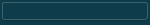
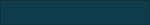
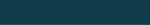
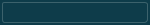
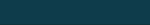
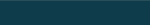

| Key | Value | Reference | Preview |
|---|---|---|---|
| %shadow | #000000 [000,000,000] | ||
| %textForegroundHighlight | #002B36 [000,043,054] | ||
| %fileIconForeground | #002B36 [000,043,054] | ||
| %textForegroundInactive | #657B83 [101,123,131] | ||
| %controlFadeEnd | #6B8086 [107,128,134] | ||
| %controlFillSecondary | #6B8086 [107,128,134] | ||
| %controlPassedFadeEnd | #77DF92 [119,223,146] | ||
| %controlFillDisabled | #839496 [131,148,150] | ||
| %fileIconBackground | #849396 [132,147,150] | ||
| %fileIconHighlight | #859900 [133,153,000] | ||
| %controlBorderFocusSelected | #86ABCB [134,171,203] | ||
| %controlBorderFocus | #86ABCB [134,171,203] | ||
| %highlightFillMono | #99A1A5 [153,161,165] | ||
| %windowButtonDisabled | #9B9C9C [155,156,156] | ||
| %borderTertiary | #A0A0A0 [160,160,160] | ||
| %glowFocusLine | #A5C7E2 [165,199,226] | ||
| %warningIconColor | #B58900 [181,137,000] | ||
| %textIconDisabled | #B8BABA [184,186,186] | ||
| %widgetBorder | #BAB5A7 [186,181,167] | ||
| %backgroundSelectedSecondary | #BCB6A4 [188,182,164] | ||
| %menuIconDisabled | #BCBCBC [188,188,188] | ||
| %controlBorder | #BDB8AA [189,184,170] | ||
| %menuIconHovered | #BDECFB [189,236,251] | ||
| %controlBackground | #C3BEAF [195,190,175] | ||
| %controlFadeStart | #C3BEAF [195,190,175] | ||
| %border | #C6C1B1 [198,193,177] | ||
| %backgroundHoverColorful | #C8C7BC [200,199,188] | ||
| %borderSecondary | #C9C3B3 [201,195,179] | ||
| %widgetBorderInactive | #CCC6B6 [204,198,182] | ||
| %clickHighlight | #CCC6B6 [204,198,182] | ||
| %controlBorderDisabled | #CCC6B6 [204,198,182] | ||
| %controlBorderSecondary | #D0CBBD [208,203,189] | ||
| %controlErrorFadeStart | #D14943 [209,073,067] | ||
| %controlFillHighlightDisabled | #D2CBB9 [210,203,185] | ||
| %highlightFill | #D2CBB9 [210,203,185] | ||
| %backgroundHoverSecondary | #D7D1BE [215,209,190] | ||
| %backgroundHover | #D7D1BF [215,209,191] | ||
| %controlTrack | #DACAA1 [218,202,161] | ||
| %hoverHighlight | #DBD6C4 [219,214,196] | ||
| %glowWarning | #DC9E2F [220,158,047] | ||
| %errorIconColor | #DC322F [220,050,047] | ||
| %backgroundColorful | #DEDDD1 [222,221,209] | ||
| %glowErrorLine | #DE3641 [222,054,065] | ||
| %glowFocusErrorLine | #DE3641 [222,054,065] | ||
| %glowFocusError | #DE3641 [222,054,065] | ||
| %hoverHighlightSecondary | #E2DBC9 [226,219,201] | ||
| %backgroundSelectedColorful | #E6E5DC [230,229,220] | ||
| %hoverHighlightColorful | #E6E5DC [230,229,220] | ||
| %glowError | #E8B4A6 [232,180,166] | ||
| %clickHighlightSecondary | #E9E4D6 [233,228,214] | ||
| %textBackgroundInactive | #EEE8D5 [238,232,213] | ||
| %background | #EEE8D5 [238,232,213] | ||
| %widgetFillInactive | #EEE8D5 [238,232,213] | ||
| %textBackgroundSecondaryInactive | #EEE8D5 [238,232,213] | ||
| %clickHighlightColorful | #EEEEE8 [238,238,232] | ||
| %menuIconSelectedSecondary | #EEEEEE [238,238,238] | ||
| %backgroundAlternative | #F0EBDB [240,235,219] | ||
| %textSelectionBackgroundSecondary | #F3EDDC [243,237,220] | ||
| %dropBackground | #F3EDDC [243,237,220] | ||
| %gridLine | #F5EEDC [245,238,220] | ||
| %backgroundToolTip | #F5F1E5 [245,241,229] | ||
| %backgroundToolTipInactive | #F5F1E5 [245,241,229] | ||
| %controlErrorFadeEnd | #F6887C [246,136,124] | ||
| %glowWarningLine | #F6CA7C [246,202,124] | ||
| %backgroundSelected | #FAF3E0 [250,243,224] | ||
| %backgroundContainer | #FDF6E3 [253,246,227] | ||
| %backgroundHeader | #FDF6E3 [253,246,227] | ||
| %widgetFill | #FDF6E3 [253,246,227] | ||
| %textBackground | #FDF6E3 [253,246,227] | ||
| %textBackgroundSecondary | #FDF6E3 [253,246,227] | ||
| %textSelectionForeground | #FFFFFF [255,255,255] | ||
| %controlFill | #FFFFFF [255,255,255] | ||
| %textContrastForeground | #FFFFFF [255,255,255] | ||
| %textForegroundDefault | #FFFFFF [255,255,255] | ||
| %windowCloseHovered | #FFFFFF [255,255,255] | ||
| %controlFillFocus | #FFFFFF [255,255,255] | ||
| %textIconSelected | #FFFFFF [255,255,255] | ||
| %menuIconSelected | #FFFFFF [255,255,255] | ||
| %borderFocus | #248AD4 [036,138,212] | ||
| %menuIconHighlight | #268BD2 [038,139,210] | ||
| %informationIconColor | #268BD2 [038,139,210] | ||
| %questionIconColor | #268BD2 [038,139,210] | ||
| %controlPassedFadeStart | #2DAA66 [045,170,102] | ||
| %textForeground | #2E4E58 [046,078,088] | ||
| %textSelectionForegroundInactive | #2E4E58 [046,078,088] | ||
| %caret | #2E4E58 [046,078,088] | ||
| %windowButton | #050708 [005,007,008] | ||
| %textSelectionBackground | #3570CD [053,112,205] | ||
| %highlightFillFocus | #3570CD [053,112,205] | ||
| %glowFocus | #3B93EB [059,147,235] | ||
| %highlightFillFocusSecondary | #3D7EC0 [061,126,192] | ||
| %textIconEnabled | #3E3E3C [062,062,060] | ||
| %widgetBorderDefault | #4474B1 [068,116,177] | ||
| %controlFillHighlight | #4681BB [070,129,187] | ||
| %widgetFillDefault | #4681BB [070,129,187] | ||
| %widgetFillSelected | #4984BE [073,132,190] | ||
| %controlBorderSelected | #4984BE [073,132,190] | ||
| %hoverHighlightDefault | #548BC0 [084,139,192] | ||
| %menuIconEnabled | #586E75 [088,110,117] | ||
| %textForegroundSecondary | #586E75 [088,110,117] | ||
| %hyperlink | #589DF6 [088,157,246] | ||
| %acceleratorForeground | #617EB3 [097,126,179] | ||
| %dropForeground | #617EB3 [097,126,179] | ||
| %clickHighlightDefault | #6395C6 [099,149,198] | ||
| %shadowHeight | 2 | ||
| %arcSecondaryFocus | 3 | ||
| %borderThickness | 3 | ||
| %arcSecondary | 3 | ||
| %arc | 5 | ||
| %arcFocus | 5 |
| Key | Value | Reference | Preview |
|---|---|---|---|
| AbstractButton.click.textAndMnemonic | click |
| Key | Value | Reference | Preview |
|---|---|---|---|
| AbstractDocument.redo.textAndMnemonic | Redo | ||
| AbstractDocument.undo.textAndMnemonic | Undo | ||
| AbstractDocument.addition.textAndMnemonic | addition | ||
| AbstractDocument.deletion.textAndMnemonic | deletion | ||
| AbstractDocument.styleChange.textAndMnemonic | style change |
| Key | Value | Reference | Preview |
|---|---|---|---|
| AbstractUndoableEdit.redo.textAndMnemonic | Redo | ||
| AbstractUndoableEdit.undo.textAndMnemonic | Undo |
| Key | Value | Reference | Preview |
|---|---|---|---|
| ArrowButton.up.icon | Icon [16,16] | ||
| ArrowButton.down.icon | Icon [16,16] |
| Key | Value | Reference | Preview |
|---|---|---|---|
| AuditoryCues.noAuditoryCues | Object[] | ||
| AuditoryCues.allAuditoryCues | Object[] | ||
| AuditoryCues.cueList | Object[] |
| Key | Value | Reference | Preview |
|---|---|---|---|
| ButtonUI | com.github.weisj.darklaf.ui.button.DarkButtonUI | ||
| Button.opaque | false | ||
| Button.defaultButtonFollowsFocus | false | ||
| Button.convertIconOnlyToShadow | true | ||
| Button.darkShadow | #000000 [000,000,000] | ||
| Button.select | #FF6666 [255,102,102] | ||
| Button.highlight | #FFFFFF [255,255,255] | ||
| Button.light | #0749D9 [007,073,217] | ||
| Button.font | Font [family=.AppleSystemUIFont,name=.AppleSystemUIFont,style=plain,size=12] | ||
| Button.onlyLabelInsets | Insets [0,0,0,0] | ||
| Button.fullShadowInsets | Insets [0,0,0,0] | ||
| Button.margin | Insets [0,2,0,2] | ||
| Button.squareThinBorderInsets | Insets [4,4,4,4] | ||
| Button.thinBorderInsets | Insets [4,8,4,8] | ||
| Button.squareBorderInsets | Insets [6,6,6,6] | ||
| Button.borderInsets | Insets [7,16,7,16] | ||
| Button.textShiftOffset | 0 | ||
| Button.textIconGap | 4 | ||
| Button.focusInputMap | InputMapUIResource | ||
| Button.arc | 5 | %arc | |
| Button.focusArc | 5 | %arcFocus | |
| Button.minimumArc | 3 | %arcSecondary | |
| Button.squareArc | 3 | %arcSecondary | |
| Button.squareFocusArc | 3 | %arcSecondaryFocus | |
| Button.background | #EEE8D5 [238,232,213] | %background | |
| Button.borderThickness | 3 | %borderThickness | |
| Button.activeFillColorClick | #CCC6B6 [204,198,182] | %clickHighlight | |
| Button.shadow.click | #CCC6B6 [204,198,182] | %clickHighlight | |
| Button.defaultFillColorClick | #6395C6 [099,149,198] | %clickHighlightDefault | |
| Button.focusBorderColor | #A5C7E2 [165,199,226] | %glowFocusLine | |
| Button.activeFillColorRollOver | #DBD6C4 [219,214,196] | %hoverHighlight | |
| Button.shadow.hover | #DBD6C4 [219,214,196] | %hoverHighlight | |
| Button.defaultFillColorRollOver | #548BC0 [084,139,192] | %hoverHighlightDefault | |
| Button.shadow | #000000 [000,000,000] | %shadow | |
| Button.shadowHeight | 2 | %shadowHeight | |
| Button.foreground | #2E4E58 [046,078,088] | %textForeground | |
| Button.selectedButtonForeground | #FFFFFF [255,255,255] | %textForegroundDefault | |
| Button.disabledText | #657B83 [101,123,131] | %textForegroundInactive | |
| Button.activeBorderColor | #BAB5A7 [186,181,167] | %widgetBorder | |
| Button.defaultBorderColor | #4474B1 [068,116,177] | %widgetBorderDefault | |
| Button.inactiveBorderColor | #CCC6B6 [204,198,182] | %widgetBorderInactive | |
| Button.activeFillColor | #FDF6E3 [253,246,227] | %widgetFill | |
| Button.defaultFillColor | #4681BB [070,129,187] | %widgetFillDefault | |
| Button.inactiveFillColor | #EEE8D5 [238,232,213] | %widgetFillInactive | |
| Button.border | DarkButtonBorder |  |
| Key | Value | Reference | Preview |
|---|---|---|---|
| CheckBoxUI | com.github.weisj.darklaf.ui.togglebutton.checkbox.DarkCheckBoxUI | ||
| CheckBox.disabledText | #808080 [128,128,128] | ||
| CheckBox.select | #FF6666 [255,102,102] | ||
| CheckBox.font | Font [family=.AppleSystemUIFont,name=.AppleSystemUIFont,style=plain,size=12] | ||
| CheckBox.margin | Insets [1,1,0,1] | ||
| CheckBox.borderInsets | Insets [2,2,2,2] | ||
| CheckBox.textShiftOffset | 0 | ||
| CheckBox.textIconGap | 4 | ||
| CheckBox.focusInputMap | InputMapUIResource | ||
| CheckBox.arc | 3 | %arcSecondary | |
| CheckBox.background | #EEE8D5 [238,232,213] | %background | |
| CheckBox.borderThickness | 3 | %borderThickness | |
| CheckBox.activeBorderColor | #BDB8AA [189,184,170] | %controlBorder | |
| CheckBox.inactiveBorderColor | #CCC6B6 [204,198,182] | %controlBorderDisabled | |
| CheckBox.focusBorderColor | #86ABCB [134,171,203] | %controlBorderFocus | |
| CheckBox.focusSelectedBorderColor | #86ABCB [134,171,203] | %controlBorderFocusSelected | |
| CheckBox.selectedBorderColor | #4984BE [073,132,190] | %controlBorderSelected | |
| CheckBox.activeFillColor | #FFFFFF [255,255,255] | %controlFill | |
| CheckBox.selectionSelectedColor | #FFFFFF [255,255,255] | %controlFill | |
| CheckBox.selectionDisabledColor | #839496 [131,148,150] | %controlFillDisabled | |
| CheckBox.selectionFocusSelectedColor | #FFFFFF [255,255,255] | %controlFillFocus | |
| CheckBox.foreground | #2E4E58 [046,078,088] | %textForeground | |
| CheckBox.inactiveFillColor | #EEE8D5 [238,232,213] | %widgetFillInactive | |
| CheckBox.selectedFillColor | #4984BE [073,132,190] | %widgetFillSelected | |
| CheckBox.border | DarkCheckBoxBorder | ||
| CheckBox.selected.icon | Icon [19,19] | ||
| CheckBox.indeterminate.icon | Icon [19,19] | ||
| CheckBox.indeterminateFocused.icon | Icon [19,19] | ||
| CheckBox.selectedFocused.icon | Icon [19,19] | ||
| CheckBox.uncheckedDisabled.icon | Icon [19,19] | ||
| CheckBox.selectedDisabled.icon | Icon [19,19] | ||
| CheckBox.uncheckedFocused.icon | Icon [19,19] | ||
| CheckBox.indeterminateDisabled.icon | Icon [19,19] | ||
| CheckBox.unchecked.icon | Icon [19,19] |
| Key | Value | Reference | Preview |
|---|---|---|---|
| CheckBoxMenuItemUI | com.github.weisj.darklaf.ui.togglebutton.checkbox.DarkCheckBoxMenuItemUI | ||
| CheckBoxMenuItem.borderPainted | false | ||
| CheckBoxMenuItem.doNotCloseOnMouseClick | true | ||
| CheckBoxMenuItem.disabledForeground | #808080 [128,128,128] | ||
| CheckBoxMenuItem.disabledBackground | #FFFFFF [255,255,255] | ||
| CheckBoxMenuItem.dashIcon | Icon [0,0] | ||
| CheckBoxMenuItem.arrowIcon | Icon [16,16] | ||
| CheckBoxMenuItem.checkIcon | Icon [19,19] | ||
| CheckBoxMenuItem.acceleratorFont | Font [family=.AppleSystemUIFont,name=.AppleSystemUIFont,style=plain,size=10] | ||
| CheckBoxMenuItem.font | Font [family=.AppleSystemUIFont,name=.AppleSystemUIFont,style=plain,size=12] | ||
| CheckBoxMenuItem.margin | Insets [0,0,0,0] | ||
| CheckBoxMenuItem.acceleratorSelectionForeground | #617EB3 [097,126,179] | %acceleratorForeground | |
| CheckBoxMenuItem.acceleratorForeground | #617EB3 [097,126,179] | %acceleratorForeground | |
| CheckBoxMenuItem.background | #EEE8D5 [238,232,213] | %background | |
| CheckBoxMenuItem.selectionBackground | #3570CD [053,112,205] | %highlightFillFocus | |
| CheckBoxMenuItem.foreground | #2E4E58 [046,078,088] | %textForeground | |
| CheckBoxMenuItem.selectionForeground | #FFFFFF [255,255,255] | %textSelectionForeground | |
| CheckBoxMenuItem.border | DarkMenuItemBorder | ||
| CheckBoxMenuItem.acceleratorDelimiter |
| Key | Value | Reference | Preview |
|---|---|---|---|
| ColorChooserUI | com.github.weisj.darklaf.ui.colorchooser.DarkColorChooserUI | ||
| ColorChooser.showPreviewPanelText | false | ||
| ColorChooser.pipetteEnabled | true | ||
| ColorChooser.sliderKnobColor | #993300 [153,051,000] | ||
| ColorChooser.swatchesDefaultRecentColor | #EAE4D1 [234,228,209] | ||
| ColorChooser.swatchesRecentSwatchSize | Dimension [15,15] | ||
| ColorChooser.swatchesSwatchSize | Dimension [15,15] | ||
| ColorChooser.font | Font [family=.AppleSystemUIFont,name=.AppleSystemUIFont,style=plain,size=12] | ||
| ColorChooser.errorDelay | 600 | ||
| ColorChooser.background | #EEE8D5 [238,232,213] | %background | |
| ColorChooser.colorWheelBackground | #EEE8D5 [238,232,213] | %background | |
| ColorChooser.swatchBorderColor | #C6C1B1 [198,193,177] | %border | |
| ColorChooser.colorWheelDropBackgroundColor | #F3EDDC [243,237,220] | %dropBackground | |
| ColorChooser.colorWheelDropBorderColor | #617EB3 [097,126,179] | %dropForeground | |
| ColorChooser.swatchGridColor | #F5EEDC [245,238,220] | %gridLine | |
| ColorChooser.sliderShadow | #000000 [000,000,000] | %shadow | |
| ColorChooser.foreground | #2E4E58 [046,078,088] | %textForeground | |
| ColorChooser.previewBorderColor | #BAB5A7 [186,181,167] | %widgetBorder | |
| ColorChooser.sliderBorderColor | #BAB5A7 [186,181,167] | %widgetBorder | |
| ColorChooser.pipetteBorderColor | #BAB5A7 [186,181,167] | %widgetBorder | |
| ColorChooser.rgbBlue.textAndMnemonic | &Blue | ||
| ColorChooser.hsb.textAndMnemonic | &HSB | ||
| ColorChooser.reset.textAndMnemonic | &Reset | ||
| ColorChooser.swatches.textAndMnemonic | &Swatches | ||
| ColorChooser.hsbBlue.textAndMnemonic | B | ||
| ColorChooser.hsbBrightness.textAndMnemonic | B | ||
| ColorChooser.cancel.textAndMnemonic | Cancel | ||
| ColorChooser.hsbGreen.textAndMnemonic | G | ||
| ColorChooser.rgbGreen.textAndMnemonic | Gree&n | ||
| ColorChooser.hsbHue.textAndMnemonic | H | ||
| ColorChooser.ok.textAndMnemonic | OK | ||
| ColorChooser.preview.textAndMnemonic | Preview | ||
| ColorChooser.hsbRed.textAndMnemonic | R | ||
| ColorChooser.rgb.textAndMnemonic | R&GB | ||
| ColorChooser.rgbRed.textAndMnemonic | Re&d | ||
| ColorChooser.swatchesRecent.textAndMnemonic | Recent: | ||
| ColorChooser.hsbSaturation.textAndMnemonic | S | ||
| ColorChooser.sample.textAndMnemonic | Sample Text Sample Text | ||
| ColorChooser.pipetteRollover.icon | Icon [16,16] | ||
| ColorChooser.pipette.icon | Icon [16,16] |
| Key | Value | Reference | Preview |
|---|---|---|---|
| ComboBoxUI | com.github.weisj.darklaf.ui.combobox.DarkComboBoxUI | ||
| ComboBox.isEnterSelectablePopup | false | ||
| ComboBox.noActionOnKeyNavigation | false | ||
| ComboBox.squareButton | false | ||
| ComboBox.buttonShadow | #000000 [000,000,000] | ||
| ComboBox.buttonDarkShadow | #000000 [000,000,000] | ||
| ComboBox.buttonHighlight | #FFFFFF [255,255,255] | ||
| ComboBox.buttonBackground | #FFFFFF [255,255,255] | ||
| ComboBox.font | Font [family=.AppleSystemUIFont,name=.AppleSystemUIFont,style=plain,size=12] | ||
| ComboBox.ancestorInputMap | InputMapUIResource | ||
| ComboBox.cellEditorInsets | Insets [0,0,0,0] | ||
| ComboBox.insets | Insets [5,5,5,5] | ||
| ComboBox.buttonPad | 4 | ||
| ComboBox.timeFactor | 1000 | ||
| ComboBox.arc | 5 | %arc | |
| ComboBox.editBackground | #EEE8D5 [238,232,213] | %background | |
| ComboBox.background | #FDF6E3 [253,246,227] | %backgroundContainer | |
| ComboBox.arrowBackground | #FDF6E3 [253,246,227] | %backgroundContainer | |
| ComboBox.activeBackground | #FDF6E3 [253,246,227] | %backgroundContainer | |
| ComboBox.borderThickness | 3 | %borderThickness | |
| ComboBox.focusBorderColor | #A5C7E2 [165,199,226] | %glowFocusLine | |
| ComboBox.selectionBackground | #3570CD [053,112,205] | %highlightFillFocus | |
| ComboBox.foreground | #2E4E58 [046,078,088] | %textForeground | |
| ComboBox.disabledForeground | #657B83 [101,123,131] | %textForegroundInactive | |
| ComboBox.selectionForeground | #FFFFFF [255,255,255] | %textSelectionForeground | |
| ComboBox.activeBorderColor | #BAB5A7 [186,181,167] | %widgetBorder | |
| ComboBox.inactiveBorderColor | #CCC6B6 [204,198,182] | %widgetBorderInactive | |
| ComboBox.inactiveBackground | #EEE8D5 [238,232,213] | %widgetFillInactive | |
| ComboBox.disabledBackground | #EEE8D5 [238,232,213] | %widgetFillInactive | |
| ComboBox.togglePopup.textAndMnemonic | togglePopup | ||
| ComboBox.arrowInactive.icon | Icon [16,16] | ||
| ComboBox.arrow.icon | Icon [16,16] | ||
| ComboBox.arrowEditable.icon | Icon [16,16] |
| Key | Value | Reference | Preview |
|---|---|---|---|
| Desktop.minOnScreenInsets | Insets [3,3,3,3] | ||
| Desktop.ancestorInputMap | InputMapUIResource | ||
| Desktop.background | #EEE8D5 [238,232,213] | %background |
| Key | Value | Reference | Preview |
|---|---|---|---|
| DesktopIconUI | com.github.weisj.darklaf.ui.internalframe.DarkDesktopIconUI | ||
| DesktopIcon.labelBackground | #000000 [000,000,000] | ||
| DesktopIcon.borderRimColor | #C0C0C0 [192,192,192] | ||
| DesktopIcon.font | Font [family=.AppleSystemUIFont,name=.AppleSystemUIFont,style=plain,size=12] | ||
| DesktopIcon.background | #EEE8D5 [238,232,213] | %background | |
| DesktopIcon.hoverColor | #D7D1BE [215,209,190] | %backgroundHoverSecondary | |
| DesktopIcon.clickColor | #D7D1BE [215,209,190] | %backgroundHoverSecondary | |
| DesktopIcon.borderColor | #A0A0A0 [160,160,160] | %borderTertiary | |
| DesktopIcon.border | DarkDesktopIconBorder | ||
| DesktopIcon.drag.icon | Icon [5,20] |
| Key | Value | Reference | Preview |
|---|---|---|---|
| DesktopPaneUI | com.apple.laf.AquaInternalFramePaneUI |
| Key | Value | Reference | Preview |
|---|---|---|---|
| EditorPaneUI | com.github.weisj.darklaf.ui.text.DarkEditorPaneUI | ||
| EditorPane.font | Font [family=.AppleSystemUIFont,name=.AppleSystemUIFont,style=plain,size=12] | ||
| EditorPane.margin | Insets [0,0,0,0] | ||
| EditorPane.caretBlinkRate | 500 | ||
| EditorPane.focusInputMap | InputMapUIResource | ||
| EditorPane.caretForeground | #2E4E58 [046,078,088] | %caret | |
| EditorPane.background | #FDF6E3 [253,246,227] | %textBackground | |
| EditorPane.disabledBackground | #EEE8D5 [238,232,213] | %textBackgroundInactive | |
| EditorPane.inactiveBackground | #EEE8D5 [238,232,213] | %textBackgroundInactive | |
| EditorPane.foreground | #2E4E58 [046,078,088] | %textForeground | |
| EditorPane.inactiveForeground | #657B83 [101,123,131] | %textForegroundInactive | |
| EditorPane.selectionBackground | #3570CD [053,112,205] | %textSelectionBackground | |
| EditorPane.selectionForeground | #FFFFFF [255,255,255] | %textSelectionForeground |
| Key | Value | Reference | Preview |
|---|---|---|---|
| FileChooserUI | com.github.weisj.darklaf.ui.filechooser.DarkFileChooserUI | ||
| FileChooser.listViewWindowsStyle | false | ||
| FileChooser.useSystemExtensionHiding | false | ||
| FileChooser.readOnly | false | ||
| FileChooser.usesSingleFilePane | false | ||
| FileChooser.fileNameLabelMnemonic | 0 | ||
| FileChooser.saveButtonMnemonic | 0 | ||
| FileChooser.directoryOpenButtonMnemonic | 0 | ||
| FileChooser.updateButtonMnemonic | 0 | ||
| FileChooser.openButtonMnemonic | 0 | ||
| FileChooser.cancelButtonMnemonic | 0 | ||
| FileChooser.lookInLabelMnemonic | 0 | ||
| FileChooser.helpButtonMnemonic | 0 | ||
| FileChooser.filesOfTypeLabelMnemonic | 0 | ||
| FileChooser.rowHeight | 20 | ||
| FileChooser.minEditDelay | 200 | ||
| FileChooser.maxEditDelay | 600 | ||
| FileChooser.ancestorInputMap | InputMapUIResource | ||
| FileChooser.borderColor | #C6C1B1 [198,193,177] | %border | |
| FileChooser.listViewBorder | DarkFileChooserListViewBorder |  | |
| FileChooser.newFolderErrorSeparator | : | ||
| FileChooser.acceptAllFileFilter.textAndMnemonic | All Files | ||
| FileChooser.cancelButton.textAndMnemonic | Cancel | ||
| FileChooser.chooseButton.textAndMnemonic | Choose | ||
| FileChooser.createButton.textAndMnemonic | Create | ||
| FileChooser.byDate.textAndMnemonic | Date Modified | ||
| FileChooser.desktopName | Desktop | ||
| FileChooser.directoryDescription.textAndMnemonic | Directory | ||
| FileChooser.newFolderError.textAndMnemonic | Error occurred during folder creation | ||
| FileChooser.filesOfTypeLabel.textAndMnemonic | File Format: | ||
| FileChooser.fileNameLabel.textAndMnemonic | File: | ||
| FileChooser.fileDescription.textAndMnemonic | Generic File | ||
| FileChooser.helpButton.textAndMnemonic | Help | ||
| FileChooser.by.textAndMnemonic | Name | ||
| FileChooser.newFolderPrompt.textAndMnemonic | Name of new folder: | ||
| FileChooser.newFolderAccessibleName | New Folder | ||
| FileChooser.newFolderTitle.textAndMnemonic | New Folder | ||
| FileChooser.newFolderButton.textAndMnemonic | New Folder | ||
| FileChooser.openButton.textAndMnemonic | Open | ||
| FileChooser.directoryOpenButton.textAndMnemonic | Open | ||
| FileChooser.openTitle.textAndMnemonic | Open | ||
| FileChooser.openDialogTitle.textAndMnemonic | Open | ||
| FileChooser.saveDialogTitle.textAndMnemonic | Save | ||
| FileChooser.saveButton.textAndMnemonic | Save | ||
| FileChooser.saveTitle.textAndMnemonic | Save | ||
| FileChooser.saveDialogFileNameLabel.textAndMnemonic | Save As: | ||
| FileChooser.newFolderExistsError.textAndMnemonic | That name is already taken | ||
| FileChooser.updateButton.textAndMnemonic | Update | ||
| FileChooser.untitledFileName | untitled | ||
| FileChooser.mac.newFolder | untitled folder | ||
| FileChooser.untitledFolderName | untitled folder | ||
| FileChooser.mac.newFolder.subsequent | untitled folder {0} | ||
| FileChooser.fileSizeGigaBytes | {0} gb | ||
| FileChooser.fileSizeKiloBytes | {0} kb | ||
| FileChooser.fileSizeMegaBytes | {0} mb | ||
| FileChooser.detailsViewIcon | Icon [16,16] | ||
| FileChooser.detailsViewSelectedIcon | Icon [16,16] | ||
| FileChooser.listViewIcon | Icon [16,16] | ||
| FileChooser.listViewSelectedIcon | Icon [16,16] | ||
| FileChooser.newFolderIcon | Icon [16,16] | ||
| FileChooser.homeFolderIcon | Icon [16,16] | ||
| FileChooser.upFolderIcon | Icon [16,16] |
| Key | Value | Reference | Preview |
|---|---|---|---|
| FileView.fullRowSelection | true | ||
| FileView.background | #FDF6E3 [253,246,227] | %textBackground | |
| FileView.foreground | #2E4E58 [046,078,088] | %textForeground | |
| FileView.floppyDriveIcon | Icon [16,16] | ||
| FileView.hardDriveIcon | Icon [16,16] | ||
| FileView.computerIcon | Icon [16,16] | ||
| FileView.directoryIcon | Icon [16,16] | ||
| FileView.fileIcon | Icon [16,16] |
| Key | Value | Reference | Preview |
|---|---|---|---|
| Focus.color | #074CF1 [007,076,241] |
| Key | Value | Reference | Preview |
|---|---|---|---|
| FormView.browseFileButton.textAndMnemonic | Browse... | ||
| FormView.resetButton.textAndMnemonic | Reset | ||
| FormView.submitButton.textAndMnemonic | Submit Query |
| Key | Value | Reference | Preview |
|---|---|---|---|
| FormattedTextFieldUI | com.github.weisj.darklaf.ui.text.DarkFormattedTextFieldUI | ||
| FormattedTextField.inactiveForeground | #808080 [128,128,128] | ||
| FormattedTextField.font | Font [family=.AppleSystemUIFont,name=.AppleSystemUIFont,style=plain,size=12] | ||
| FormattedTextField.margin | Insets [0,0,0,0] | ||
| FormattedTextField.caretBlinkRate | 500 | ||
| FormattedTextField.focusInputMap | InputMapUIResource | ||
| FormattedTextField.caretForeground | #2E4E58 [046,078,088] | %caret | |
| FormattedTextField.background | #FDF6E3 [253,246,227] | %textBackground | |
| FormattedTextField.disabledBackground | #EEE8D5 [238,232,213] | %textBackgroundInactive | |
| FormattedTextField.inactiveBackground | #EEE8D5 [238,232,213] | %textBackgroundInactive | |
| FormattedTextField.foreground | #2E4E58 [046,078,088] | %textForeground | |
| FormattedTextField.selectionBackground | #3570CD [053,112,205] | %textSelectionBackground | |
| FormattedTextField.selectionForeground | #FFFFFF [255,255,255] | %textSelectionForeground | |
| FormattedTextField.border | DarkTextBorder | |
| Key | Value | Reference | Preview |
|---|---|---|---|
| Highlight.arc | 5 | %arc |
| Key | Value | Reference | Preview |
|---|---|---|---|
| Hyperlink.linkColor | #589DF6 [088,157,246] | %hyperlink |
| Key | Value | Reference | Preview |
|---|---|---|---|
| IconButton.font | Font [family=.AppleSystemUIFont,name=.AppleSystemUIFont,style=plain,size=12] |
| Key | Value | Reference | Preview |
|---|---|---|---|
| Icons.CheckBox.activeBorderColor | #BDB8AA [189,184,170] | %CheckBox.activeBorderColor | |
| Icons.CheckBoxFocused.activeFillColor | #FFFFFF [255,255,255] | %CheckBox.activeFillColor | |
| Icons.CheckBox.activeFillColor | #FFFFFF [255,255,255] | %CheckBox.activeFillColor | |
| Icons.CheckBoxFocused.focusBorderColor | #86ABCB [134,171,203] | %CheckBox.focusBorderColor | |
| Icons.CheckBoxIndeterminateSelectedFocused.focusSelectedBorderColor | #86ABCB [134,171,203] | %CheckBox.focusSelectedBorderColor | |
| Icons.CheckBoxSelectedFocused.focusSelectedBorderColor | #86ABCB [134,171,203] | %CheckBox.focusSelectedBorderColor | |
| Icons.CheckBoxDisabled.inactiveBorderColor | #CCC6B6 [204,198,182] | %CheckBox.inactiveBorderColor | |
| Icons.CheckBoxSelectedDisabled.inactiveBorderColor | #CCC6B6 [204,198,182] | %CheckBox.inactiveBorderColor | |
| Icons.CheckBoxIndeterminateSelectedDisabled.inactiveBorderColor | #CCC6B6 [204,198,182] | %CheckBox.inactiveBorderColor | |
| Icons.CheckBoxIndeterminateSelectedDisabled.inactiveFillColor | #EEE8D5 [238,232,213] | %CheckBox.inactiveFillColor | |
| Icons.CheckBoxSelectedDisabled.inactiveFillColor | #EEE8D5 [238,232,213] | %CheckBox.inactiveFillColor | |
| Icons.CheckBoxDisabled.inactiveFillColor | #EEE8D5 [238,232,213] | %CheckBox.inactiveFillColor | |
| Icons.CheckBoxSelected.selectedBorderColor | #4984BE [073,132,190] | %CheckBox.selectedBorderColor | |
| Icons.CheckBoxIndeterminateSelected.selectedBorderColor | #4984BE [073,132,190] | %CheckBox.selectedBorderColor | |
| Icons.CheckBoxIndeterminateSelectedFocused.selectedFillColor | #4984BE [073,132,190] | %CheckBox.selectedFillColor | |
| Icons.CheckBoxSelected.selectedFillColor | #4984BE [073,132,190] | %CheckBox.selectedFillColor | |
| Icons.CheckBoxSelectedFocused.selectedFillColor | #4984BE [073,132,190] | %CheckBox.selectedFillColor | |
| Icons.CheckBoxIndeterminateSelected.selectedFillColor | #4984BE [073,132,190] | %CheckBox.selectedFillColor | |
| Icons.CheckBoxSelectedDisabled.selectionDisabledColor | #839496 [131,148,150] | %CheckBox.selectionDisabledColor | |
| Icons.CheckBoxIndeterminateSelectedDisabled.selectionDisabledColor | #839496 [131,148,150] | %CheckBox.selectionDisabledColor | |
| Icons.CheckBoxIndeterminateSelectedFocused.selectionFocusSelectedColor | #FFFFFF [255,255,255] | %CheckBox.selectionFocusSelectedColor | |
| Icons.CheckBoxSelectedFocused.selectionFocusSelectedColor | #FFFFFF [255,255,255] | %CheckBox.selectionFocusSelectedColor | |
| Icons.CheckBoxIndeterminateSelected.selectionSelectedColor | #FFFFFF [255,255,255] | %CheckBox.selectionSelectedColor | |
| Icons.CheckBoxSelected.selectionSelectedColor | #FFFFFF [255,255,255] | %CheckBox.selectionSelectedColor | |
| Icons.RadioButton.activeBorderColor | #BDB8AA [189,184,170] | %RadioButton.activeBorderColor | |
| Icons.RadioButton.activeFillColor | #FFFFFF [255,255,255] | %RadioButton.activeFillColor | |
| Icons.RadioButtonFocused.activeFillColor | #FFFFFF [255,255,255] | %RadioButton.activeFillColor | |
| Icons.RadioButtonFocused.focusBorderColor | #86ABCB [134,171,203] | %RadioButton.focusBorderColor | |
| Icons.RadioButtonSelectedFocused.focusSelectedBorderColor | #86ABCB [134,171,203] | %RadioButton.focusSelectedBorderColor | |
| Icons.RadioButtonDisabled.inactiveBorderColor | #CCC6B6 [204,198,182] | %RadioButton.inactiveBorderColor | |
| Icons.RadioButtonSelectedDisabled.inactiveBorderColor | #CCC6B6 [204,198,182] | %RadioButton.inactiveBorderColor | |
| Icons.RadioButtonSelectedDisabled.inactiveFillColor | #EEE8D5 [238,232,213] | %RadioButton.inactiveFillColor | |
| Icons.RadioButtonDisabled.inactiveFillColor | #EEE8D5 [238,232,213] | %RadioButton.inactiveFillColor | |
| Icons.RadioButtonSelected.selectedBorderColor | #4984BE [073,132,190] | %RadioButton.selectedBorderColor | |
| Icons.RadioButtonSelectedFocused.selectedFillColor | #4984BE [073,132,190] | %RadioButton.selectedFillColor | |
| Icons.RadioButtonSelected.selectedFillColor | #4984BE [073,132,190] | %RadioButton.selectedFillColor | |
| Icons.RadioButtonSelectedDisabled.selectionDisabledColor | #839496 [131,148,150] | %RadioButton.selectionDisabledColor | |
| Icons.RadioButtonSelectedFocused.selectionFocusSelectedColor | #FFFFFF [255,255,255] | %RadioButton.selectionFocusSelectedColor | |
| Icons.RadioButtonSelected.selectionSelectedColor | #FFFFFF [255,255,255] | %RadioButton.selectionSelectedColor | |
| Icons.divider.color | #C9C3B3 [201,195,179] | %borderSecondary | |
| Icons.errorDialog.color | #DC322F [220,050,047] | %errorIconColor | |
| Icons.pipetteRollover.color | #DC322F [220,050,047] | %errorIconColor | |
| Icons.folder.color | #849396 [132,147,150] | %fileIconBackground | |
| Icons.upFolder.color | #849396 [132,147,150] | %fileIconBackground | |
| Icons.drive.color | #849396 [132,147,150] | %fileIconBackground | |
| Icons.unknownFile.color | #849396 [132,147,150] | %fileIconBackground | |
| Icons.generalFile.color | #849396 [132,147,150] | %fileIconBackground | |
| Icons.textFile.color | #849396 [132,147,150] | %fileIconBackground | |
| Icons.textFile.foregroundColor | #002B36 [000,043,054] | %fileIconForeground | |
| Icons.drive.dotColor | #859900 [133,153,000] | %fileIconHighlight | |
| Icons.RadioButtonSelectedFocused.glowFocus | #3B93EB [059,147,235] | %glowFocus | |
| Icons.CheckBoxSelectedFocused.glowFocus | #3B93EB [059,147,235] | %glowFocus | |
| Icons.CheckBoxFocused.glowFocus | #3B93EB [059,147,235] | %glowFocus | |
| Icons.RadioButtonFocused.glowFocus | #3B93EB [059,147,235] | %glowFocus | |
| Icons.CheckBoxIndeterminateSelectedFocused.glowFocus | #3B93EB [059,147,235] | %glowFocus | |
| Icons.informationDialog.color | #268BD2 [038,139,210] | %informationIconColor | |
| Icons.moveToBottomRightDisabled.color | #BCBCBC [188,188,188] | %menuIconDisabled | |
| Icons.moveToTopLeftDisabled.color | #BCBCBC [188,188,188] | %menuIconDisabled | |
| Icons.speaker1Disabled.volumeColor | #BCBCBC [188,188,188] | %menuIconDisabled | |
| Icons.moveToTopRightDisabled.color | #BCBCBC [188,188,188] | %menuIconDisabled | |
| Icons.speaker2Disabled.volumeColor | #BCBCBC [188,188,188] | %menuIconDisabled | |
| Icons.moveToBottomLeftDisabled.color | #BCBCBC [188,188,188] | %menuIconDisabled | |
| Icons.moveToRightBottomDisabled.color | #BCBCBC [188,188,188] | %menuIconDisabled | |
| Icons.speaker0Disabled.crossColor | #BCBCBC [188,188,188] | %menuIconDisabled | |
| Icons.speaker4Disabled.volumeColor | #BCBCBC [188,188,188] | %menuIconDisabled | |
| Icons.moveToLeftBottomDisabled.color | #BCBCBC [188,188,188] | %menuIconDisabled | |
| Icons.arrowRightDisabled.color | #BCBCBC [188,188,188] | %menuIconDisabled | |
| Icons.arrowDownDisabled.color | #BCBCBC [188,188,188] | %menuIconDisabled | |
| Icons.eyeHovered.color | #BCBCBC [188,188,188] | %menuIconDisabled | |
| Icons.speaker0Disabled.color | #BCBCBC [188,188,188] | %menuIconDisabled | |
| Icons.speaker4Disabled.color | #BCBCBC [188,188,188] | %menuIconDisabled | |
| Icons.arrowLeftDisabled.color | #BCBCBC [188,188,188] | %menuIconDisabled | |
| Icons.moveToRightTopDisabled.color | #BCBCBC [188,188,188] | %menuIconDisabled | |
| Icons.closeHovered.color | #BCBCBC [188,188,188] | %menuIconDisabled | |
| Icons.speaker3Disabled.volumeColor | #BCBCBC [188,188,188] | %menuIconDisabled | |
| Icons.speaker3Disabled.color | #BCBCBC [188,188,188] | %menuIconDisabled | |
| Icons.speaker1Disabled.color | #BCBCBC [188,188,188] | %menuIconDisabled | |
| Icons.moveToLeftTopDisabled.color | #BCBCBC [188,188,188] | %menuIconDisabled | |
| Icons.arrowUpDisabled.color | #BCBCBC [188,188,188] | %menuIconDisabled | |
| Icons.speaker2Disabled.color | #BCBCBC [188,188,188] | %menuIconDisabled | |
| Icons.arrowDownSort.color | #586E75 [088,110,117] | %menuIconEnabled | |
| Icons.add.color | #586E75 [088,110,117] | %menuIconEnabled | |
| Icons.moveToBottomLeft.color | #586E75 [088,110,117] | %menuIconEnabled | |
| Icons.moveToLeftBottom.color | #586E75 [088,110,117] | %menuIconEnabled | |
| Icons.desktop.color | #586E75 [088,110,117] | %menuIconEnabled | |
| Icons.speaker0.color | #586E75 [088,110,117] | %menuIconEnabled | |
| Icons.verticalGrip.color | #586E75 [088,110,117] | %menuIconEnabled | |
| Icons.arrowUp.color | #586E75 [088,110,117] | %menuIconEnabled | |
| Icons.search.color | #586E75 [088,110,117] | %menuIconEnabled | |
| Icons.speaker1.color | #586E75 [088,110,117] | %menuIconEnabled | |
| Icons.homeFolder.color | #586E75 [088,110,117] | %menuIconEnabled | |
| Icons.arrowSplitCenterH.color | #586E75 [088,110,117] | %menuIconEnabled | |
| Icons.plus.color | #586E75 [088,110,117] | %menuIconEnabled | |
| Icons.pipette.color | #586E75 [088,110,117] | %menuIconEnabled | |
| Icons.minus.color | #586E75 [088,110,117] | %menuIconEnabled | |
| Icons.close.color | #586E75 [088,110,117] | %menuIconEnabled | |
| Icons.separatorV.color | #586E75 [088,110,117] | %menuIconEnabled | |
| Icons.speaker4.volumeColor | #586E75 [088,110,117] | %menuIconEnabled | |
| Icons.moveToTopLeft.color | #586E75 [088,110,117] | %menuIconEnabled | |
| Icons.delete.color | #586E75 [088,110,117] | %menuIconEnabled | |
| Icons.moreTabs.arrowColor | #586E75 [088,110,117] | %menuIconEnabled | |
| Icons.moveToLeftTop.color | #586E75 [088,110,117] | %menuIconEnabled | |
| Icons.speaker3.color | #586E75 [088,110,117] | %menuIconEnabled | |
| Icons.collapse.color | #586E75 [088,110,117] | %menuIconEnabled | |
| Icons.arrowRight.color | #586E75 [088,110,117] | %menuIconEnabled | |
| Icons.moveToRightTop.color | #586E75 [088,110,117] | %menuIconEnabled | |
| Icons.speaker2.volumeColor | #586E75 [088,110,117] | %menuIconEnabled | |
| Icons.paste.color | #586E75 [088,110,117] | %menuIconEnabled | |
| Icons.listFiles.color | #586E75 [088,110,117] | %menuIconEnabled | |
| Icons.searchWithHistory.arrowColor | #586E75 [088,110,117] | %menuIconEnabled | |
| Icons.speaker1.volumeColor | #586E75 [088,110,117] | %menuIconEnabled | |
| Icons.frame.color | #586E75 [088,110,117] | %menuIconEnabled | |
| Icons.arrowSplitCenterV.color | #586E75 [088,110,117] | %menuIconEnabled | |
| Icons.moveToRightBottom.color | #586E75 [088,110,117] | %menuIconEnabled | |
| Icons.clear.color | #586E75 [088,110,117] | %menuIconEnabled | |
| Icons.arrowDivider.color | #586E75 [088,110,117] | %menuIconEnabled | |
| Icons.separatorH.color | #586E75 [088,110,117] | %menuIconEnabled | |
| Icons.moveToBottomRight.color | #586E75 [088,110,117] | %menuIconEnabled | |
| Icons.verticalGlue.color | #586E75 [088,110,117] | %menuIconEnabled | |
| Icons.save.color | #586E75 [088,110,117] | %menuIconEnabled | |
| Icons.speaker4.color | #586E75 [088,110,117] | %menuIconEnabled | |
| Icons.horizontalGlue.color | #586E75 [088,110,117] | %menuIconEnabled | |
| Icons.arrowLeft.color | #586E75 [088,110,117] | %menuIconEnabled | |
| Icons.cut.color | #586E75 [088,110,117] | %menuIconEnabled | |
| Icons.arrowUpSort.color | #586E75 [088,110,117] | %menuIconEnabled | |
| Icons.horizontalGrip.color | #586E75 [088,110,117] | %menuIconEnabled | |
| Icons.moveToTopRight.color | #586E75 [088,110,117] | %menuIconEnabled | |
| Icons.copy.color | #586E75 [088,110,117] | %menuIconEnabled | |
| Icons.groupBy.color | #586E75 [088,110,117] | %menuIconEnabled | |
| Icons.arrowsUpDownSort.color | #586E75 [088,110,117] | %menuIconEnabled | |
| Icons.eye.color | #586E75 [088,110,117] | %menuIconEnabled | |
| Icons.speaker3.volumeColor | #586E75 [088,110,117] | %menuIconEnabled | |
| Icons.searchWithHistory.color | #586E75 [088,110,117] | %menuIconEnabled | |
| Icons.newFolder.color | #586E75 [088,110,117] | %menuIconEnabled | |
| Icons.moreTabs.color | #586E75 [088,110,117] | %menuIconEnabled | |
| Icons.speaker0.crossColor | #586E75 [088,110,117] | %menuIconEnabled | |
| Icons.speaker2.color | #586E75 [088,110,117] | %menuIconEnabled | |
| Icons.arrowDown.color | #586E75 [088,110,117] | %menuIconEnabled | |
| Icons.unknownFile.questionColor | #268BD2 [038,139,210] | %menuIconHighlight | |
| Icons.upFolder.arrowColor | #268BD2 [038,139,210] | %menuIconHighlight | |
| Icons.arrowLeftHover.color | #BDECFB [189,236,251] | %menuIconHovered | |
| Icons.arrowDownHover.color | #BDECFB [189,236,251] | %menuIconHovered | |
| Icons.arrowRightHover.color | #BDECFB [189,236,251] | %menuIconHovered | |
| Icons.arrowUpHover.color | #BDECFB [189,236,251] | %menuIconHovered | |
| Icons.arrowUpSelected.color | #FFFFFF [255,255,255] | %menuIconSelected | |
| Icons.arrowLeftSelected.color | #FFFFFF [255,255,255] | %menuIconSelected | |
| Icons.arrowDownSelected.color | #FFFFFF [255,255,255] | %menuIconSelected | |
| Icons.minusSelected.color | #FFFFFF [255,255,255] | %menuIconSelected | |
| Icons.arrowRightSelected.color | #FFFFFF [255,255,255] | %menuIconSelected | |
| Icons.plusSelected.color | #FFFFFF [255,255,255] | %menuIconSelected | |
| Icons.listFiles.selected.color | #EEEEEE [238,238,238] | %menuIconSelectedSecondary | |
| Icons.groupBy.selected.color | #EEEEEE [238,238,238] | %menuIconSelectedSecondary | |
| Icons.questionDialog.color | #268BD2 [038,139,210] | %questionIconColor | |
| Icons.checkmarkDisabled.color | #B8BABA [184,186,186] | %textIconDisabled | |
| Icons.checkmark.color | #3E3E3C [062,062,060] | %textIconEnabled | |
| Icons.checkmarkSelected.color | #FFFFFF [255,255,255] | %textIconSelected | |
| Icons.warningDialog.color | #B58900 [181,137,000] | %warningIconColor | |
| Icons.windowRestore.color | #050708 [005,007,008] | %windowButton | |
| Icons.windowMaximize.color | #050708 [005,007,008] | %windowButton | |
| Icons.windowHelp.color | #050708 [005,007,008] | %windowButton | |
| Icons.windowMinimize.color | #050708 [005,007,008] | %windowButton | |
| Icons.windowClose.color | #050708 [005,007,008] | %windowButton | |
| Icons.windowRestoreInactive.color | #9B9C9C [155,156,156] | %windowButtonDisabled | |
| Icons.windowMaximizeInactive.color | #9B9C9C [155,156,156] | %windowButtonDisabled | |
| Icons.windowCloseInactive.color | #9B9C9C [155,156,156] | %windowButtonDisabled | |
| Icons.windowHelpInactive.color | #9B9C9C [155,156,156] | %windowButtonDisabled | |
| Icons.windowMinimizeInactive.color | #9B9C9C [155,156,156] | %windowButtonDisabled | |
| Icons.windowCloseHover.color | #FFFFFF [255,255,255] | %windowCloseHovered |
| Key | Value | Reference | Preview |
|---|---|---|---|
| InsetBorder.aquaVariant | Titleless |
| Key | Value | Reference | Preview |
|---|---|---|---|
| InternalFrameUI | com.github.weisj.darklaf.ui.internalframe.DarkInternalFrameUI | ||
| InternalFrame.paletteTitleFont | Font [family=Lucida Grande,name=Lucida Grande,style=plain,size=14] | ||
| InternalFrame.optionDialogTitleFont | Font [family=Lucida Grande,name=Lucida Grande,style=plain,size=14] | ||
| InternalFrame.opaque | false | ||
| InternalFrame.borderHighlight | #0000FF [000,000,255] | ||
| InternalFrame.borderDarkShadow | #00FF00 [000,255,000] | ||
| InternalFrame.borderShadow | #FF0000 [255,000,000] | ||
| InternalFrame.borderLight | #FFFF00 [255,255,000] | ||
| InternalFrame.activeTitleForeground | #000000 [000,000,000] | ||
| InternalFrame.inactiveTitleForeground | #808080 [128,128,128] | ||
| InternalFrame.titleFont | Font [family=.AppleSystemUIFont,name=.AppleSystemUIFont,style=plain,size=11] | ||
| InternalFrame.windowBindings | Object[] | ||
| InternalFrame.background | #EEE8D5 [238,232,213] | %background | |
| InternalFrame.activeTitleBackground | #DEDDD1 [222,221,209] | %backgroundColorful | |
| InternalFrame.borderShadowColor | #000000 [000,000,000] | %shadow | |
| InternalFrame.border | DarkInternalFrameBorder | 
|
|
| InternalFrame.optionDialogBorder | DarkInternalFrameBorder | |
|
| InternalFrame.paletteBorder | DarkInternalFrameBorder | |
|
| InternalFrame.closeButtonToolTip | Close | ||
| InternalFrame.maxButtonToolTip | Maximize | ||
| InternalFrame.iconButtonToolTip | Minimize | ||
| InternalFrame.restoreButtonToolTip | Restore | ||
| InternalFrame.inactiveTitleBackground | #EEEEEE [238,238,238] | ||
| InternalFrame.borderColor | #EEEEEE [238,238,238] | ||
| InternalFrame.paletteBackground | #EEEEEE [238,238,238] | ||
| InternalFrame.optionDialogBackground | #EEEEEE [238,238,238] | ||
| InternalFrame.icon | Icon [16,16] |
| Key | Value | Reference | Preview |
|---|---|---|---|
| InternalFrameTitlePane.closeButtonOpacity | true | ||
| InternalFrameTitlePane.maximizeButtonOpacity | true | ||
| InternalFrameTitlePane.iconifyButtonOpacity | true | ||
| InternalFrameTitlePane.buttonColor | #EEE8D5 [238,232,213] | %background | |
| InternalFrameTitlePane.backgroundColor | #EEE8D5 [238,232,213] | %background | |
| InternalFrameTitlePane.selectedBackgroundColor | #DEDDD1 [222,221,209] | %backgroundColorful | |
| InternalFrameTitlePane.selectedButtonColor | #DEDDD1 [222,221,209] | %backgroundColorful | |
| InternalFrameTitlePane.borderColor | #C9C3B3 [201,195,179] | %borderSecondary | |
| InternalFrameTitlePane.buttonClickColor | #CCC6B6 [204,198,182] | %clickHighlight | |
| InternalFrameTitlePane.selectedButtonClickColor | #EEEEE8 [238,238,232] | %clickHighlightColorful | |
| InternalFrameTitlePane.buttonHoverColor | #DBD6C4 [219,214,196] | %hoverHighlight | |
| InternalFrameTitlePane.selectedButtonHoverColor | #E6E5DC [230,229,220] | %hoverHighlightColorful | |
| InternalFrameTitlePane.selectedTextForeground | #2E4E58 [046,078,088] | %textForeground | |
| InternalFrameTitlePane.closeButtonAccessibleName | Close | ||
| InternalFrameTitlePane.closeButton.textAndMnemonic | Close | ||
| InternalFrameTitlePane.iconifyButtonAccessibleName | Iconify | ||
| InternalFrameTitlePane.maximizeButtonAccessibleName | Maximize | ||
| InternalFrameTitlePane.maximizeButton.textAndMnemonic | Maximize | ||
| InternalFrameTitlePane.minimizeButton.textAndMnemonic | Minimize | ||
| InternalFrameTitlePane.moveButton.textAndMnemonic | Move | ||
| InternalFrameTitlePane.restoreButton.textAndMnemonic | Restore | ||
| InternalFrameTitlePane.sizeButton.textAndMnemonic | Size | ||
| InternalFrameTitlePane.minimize.icon | Icon [16,16] | ||
| InternalFrameTitlePane.close.icon | Icon [16,16] | ||
| InternalFrameTitlePane.maximize.icon | Icon [16,16] | ||
| InternalFrameTitlePane.iconify.icon | Icon [16,16] |
| Key | Value | Reference | Preview |
|---|---|---|---|
| IsindexView.prompt | This is a searchable index. Enter search keywords: |
| Key | Value | Reference | Preview |
|---|---|---|---|
| LabelUI | com.github.weisj.darklaf.ui.label.DarkLabelUI | ||
| Label.opaque | true | ||
| Label.disabledForeground | #808080 [128,128,128] | ||
| Label.disabledShadow | #404040 [064,064,064] | ||
| Label.font | Font [family=.AppleSystemUIFont,name=.AppleSystemUIFont,style=plain,size=12] | ||
| Label.background | #EEE8D5 [238,232,213] | %background | |
| Label.foreground | #2E4E58 [046,078,088] | %textForeground | |
| Label.inactiveForeground | #657B83 [101,123,131] | %textForegroundInactive | |
| Label.cellForegroundNoFocus | #2E4E58 [046,078,088] | %textSelectionForegroundInactive |
| Key | Value | Reference | Preview |
|---|---|---|---|
| ListUI | com.github.weisj.darklaf.ui.list.DarkListUI | ||
| List.cellRenderer | UIResource | ||
| List.sourceListBackgroundPainter | ComponentPainter | ||
| List.sourceListSelectionBackgroundPainter | ComponentPainter | ||
| List.sourceListFocusedSelectionBackgroundPainter | ComponentPainter | ||
| List.evenRowBackgroundPainter | ComponentPainter | ||
| List.oddRowBackgroundPainter | ComponentPainter | ||
| List.alternateRowColor | true | ||
| List.noFocusBorder | EmptyBorderUIResource | ||
| List.font | Font [family=.AppleSystemUIFont,name=.AppleSystemUIFont,style=plain,size=12] | ||
| List.focusInputMap | InputMapUIResource | ||
| List.focusInputMap.RightToLeft | InputMapUIResource | ||
| List.timeFactor | 1000 | ||
| List.alternateRowBackground | #F0EBDB [240,235,219] | %backgroundAlternative | |
| List.background | #FDF6E3 [253,246,227] | %backgroundContainer | |
| List.focusBorderColor | #248AD4 [036,138,212] | %borderFocus | |
| List.dropLineColor | #617EB3 [097,126,179] | %dropForeground | |
| List.selectionNoFocusBackground | #D2CBB9 [210,203,185] | %highlightFill | |
| List.selectionInactiveBackground | #D2CBB9 [210,203,185] | %highlightFill | |
| List.selectionBackground | #3570CD [053,112,205] | %highlightFillFocus | |
| List.foreground | #2E4E58 [046,078,088] | %textForeground | |
| List.selectionInactiveForeground | #657B83 [101,123,131] | %textForegroundInactive | |
| List.selectionForeground | #FFFFFF [255,255,255] | %textSelectionForeground | |
| List.selectionForegroundInactive | #2E4E58 [046,078,088] | %textSelectionForegroundInactive | |
| List.focusCellHighlightBorder | DarkListCellBorder | ||
| List.focusSelectedCellHighlightBorder | DarkListCellFocusBorder | ||
| List.cellNoFocusBorder | DarkListCellBorder |
| Key | Value | Reference | Preview |
|---|---|---|---|
| MacOS.OptionPane.questionDialog.titlePane.background | #EEE8D5 [238,232,213] | %background | |
| MacOS.TitlePane.inactiveBackground | #EEE8D5 [238,232,213] | %background | |
| MacOS.OptionPane.errorDialog.titlePane.background | #EEE8D5 [238,232,213] | %background | |
| MacOS.TitlePane.background | #EEE8D5 [238,232,213] | %background | |
| MacOS.OptionPane.warningDialog.titlePane.background | #EEE8D5 [238,232,213] | %background | |
| MacOS.TitlePane.borderColor | #C9C3B3 [201,195,179] | %borderSecondary | |
| MacOS.OptionPane.questionDialog.titlePane.foreground | #2E4E58 [046,078,088] | %textForeground | |
| MacOS.OptionPane.errorDialog.titlePane.foreground | #2E4E58 [046,078,088] | %textForeground | |
| MacOS.OptionPane.warningDialog.titlePane.foreground | #2E4E58 [046,078,088] | %textForeground | |
| MacOS.TitlePane.inactiveForeground | #657B83 [101,123,131] | %textForegroundInactive | |
| MacOS.TitlePane.foreground | #586E75 [088,110,117] | %textForegroundSecondary |
| Key | Value | Reference | Preview |
|---|---|---|---|
| MenuUI | com.github.weisj.darklaf.ui.menu.DarkMenuUI | ||
| Menu.preserveTopLevelSelection | false | ||
| Menu.borderPainted | false | ||
| Menu.crossMenuMnemonic | true | ||
| Menu.consumesTabs | true | ||
| Menu.disabledForeground | #808080 [128,128,128] | ||
| Menu.disabledBackground | #FFFFFF [255,255,255] | ||
| Menu.checkIcon | Icon [7,7] | ||
| Menu.acceleratorFont | Font [family=.AppleSystemUIFont,name=.AppleSystemUIFont,style=plain,size=10] | ||
| Menu.font | Font [family=.AppleSystemUIFont,name=.AppleSystemUIFont,style=plain,size=12] | ||
| Menu.margin | Insets [0,0,0,0] | ||
| Menu.submenuPopupOffsetX | -4 | ||
| Menu.submenuPopupOffsetY | -2 | ||
| Menu.menuPopupOffsetX | 0 | ||
| Menu.menuPopupOffsetY | 1 | ||
| Menu.maxGutterIconWidth | 18 | ||
| Menu.acceleratorForeground | #617EB3 [097,126,179] | %acceleratorForeground | |
| Menu.acceleratorSelectionForeground | #617EB3 [097,126,179] | %acceleratorForeground | |
| Menu.background | #EEE8D5 [238,232,213] | %background | |
| Menu.selectionBackground | #3570CD [053,112,205] | %highlightFillFocus | |
| Menu.foreground | #2E4E58 [046,078,088] | %textForeground | |
| Menu.selectionForeground | #FFFFFF [255,255,255] | %textSelectionForeground | |
| Menu.border | DarkMenuItemBorder | ||
| Menu.cancelMode | hideLastSubmenu | ||
| Menu.arrowIcon | Icon [16,16] | ||
| Menu.shortcutKeys | int[] |
| Key | Value | Reference | Preview |
|---|---|---|---|
| MenuBarUI | com.github.weisj.darklaf.ui.menu.DarkMenuBarUI | ||
| MenuBar.backgroundPainter | Default |  |
|
| MenuBar.selectedBackgroundPainter | Default | |
|
| MenuBar.shadow | #000000 [000,000,000] | ||
| MenuBar.disabledForeground | #808080 [128,128,128] | ||
| MenuBar.font | Font [family=.AppleSystemUIFont,name=.AppleSystemUIFont,style=plain,size=12] | ||
| MenuBar.margin | Insets [0,8,0,8] | ||
| MenuBar.windowBindings | Object[] | ||
| MenuBar.background | #EEE8D5 [238,232,213] | %background | |
| MenuBar.highlight | #EEE8D5 [238,232,213] | %background | |
| MenuBar.disabledBackground | #EEE8D5 [238,232,213] | %background | |
| MenuBar.borderColor | #C9C3B3 [201,195,179] | %borderSecondary | |
| MenuBar.foreground | #2E4E58 [046,078,088] | %textForeground | |
| MenuBar.selectionBackground | #3570CD [053,112,205] | %textSelectionBackground | |
| MenuBar.selectionForeground | #FFFFFF [255,255,255] | %textSelectionForeground | |
| MenuBar.border | DarkMenuBarBorder |  |
| Key | Value | Reference | Preview |
|---|---|---|---|
| MenuItemUI | com.github.weisj.darklaf.ui.menu.DarkMenuItemUIBase | ||
| MenuItem.selectedBackgroundPainter | Default | |
|
| MenuItem.borderPainted | true | ||
| MenuItem.disabledForeground | #808080 [128,128,128] | ||
| MenuItem.disabledBackground | #FFFFFF [255,255,255] | ||
| MenuItem.checkIcon | Icon [7,7] | ||
| MenuItem.acceleratorFont | Font [family=.AppleSystemUIFont,name=.AppleSystemUIFont,style=plain,size=10] | ||
| MenuItem.font | Font [family=.AppleSystemUIFont,name=.AppleSystemUIFont,style=plain,size=12] | ||
| MenuItem.margin | Insets [0,0,0,0] | ||
| MenuItem.maxGutterIconWidth | 18 | ||
| MenuItem.acceleratorForeground | #617EB3 [097,126,179] | %acceleratorForeground | |
| MenuItem.acceleratorSelectionForeground | #617EB3 [097,126,179] | %acceleratorForeground | |
| MenuItem.background | #EEE8D5 [238,232,213] | %background | |
| MenuItem.selectionBackground | #3570CD [053,112,205] | %highlightFillFocus | |
| MenuItem.foreground | #2E4E58 [046,078,088] | %textForeground | |
| MenuItem.selectionForeground | #FFFFFF [255,255,255] | %textSelectionForeground | |
| MenuItem.border | DarkMenuItemBorder | ||
| MenuItem.acceleratorDelimiter | - | ||
| MenuItem.arrowHover.icon | Icon [16,16] | ||
| MenuItem.arrowIcon | Icon [16,16] |
| Key | Value | Reference | Preview |
|---|---|---|---|
| NumberingPaneUI | com.github.weisj.darklaf.ui.numberingpane.DarkNumberingPaneUI | ||
| NumberingPane.borderColor | #C9C3B3 [201,195,179] | %borderSecondary | |
| NumberingPane.textBackground | #FDF6E3 [253,246,227] | %textBackgroundSecondary | |
| NumberingPane.background | #EEE8D5 [238,232,213] | %textBackgroundSecondaryInactive | |
| NumberingPane.currentLineForeground | #2E4E58 [046,078,088] | %textForeground | |
| NumberingPane.foreground | #586E75 [088,110,117] | %textForegroundSecondary | |
| NumberingPane.currentLineBackground | #F3EDDC [243,237,220] | %textSelectionBackgroundSecondary | |
| NumberingPane.border | DarkNumberingPaneBorder |
| Key | Value | Reference | Preview |
|---|---|---|---|
| OptionPaneUI | com.github.weisj.darklaf.ui.optionpane.DarkOptionPaneUI | ||
| OptionPane.buttonFont | Font [family=Lucida Grande,name=Lucida Grande,style=plain,size=13] | ||
| OptionPane.messageFont | Font [family=Lucida Grande,name=Lucida Grande,style=plain,size=13] | ||
| OptionPane.sameSizeButtons | false | ||
| OptionPane.minimumSize | Dimension [262,90] | ||
| OptionPane.buttonAreaBorder | EmptyBorderUIResource | ||
| OptionPane.messageAreaBorder | EmptyBorderUIResource | ||
| OptionPane.font | Font [family=.AppleSystemUIFont,name=.AppleSystemUIFont,style=plain,size=12] | ||
| OptionPane.borderInsets | Insets [5,5,5,5] | ||
| OptionPane.buttonOrientation | 0 | ||
| OptionPane.buttonPadding | 5 | ||
| OptionPane.buttonClickThreshhold | 500 | ||
| OptionPane.windowBindings | Object[] | ||
| OptionPane.background | #EEE8D5 [238,232,213] | %background | |
| OptionPane.messageForeground | #2E4E58 [046,078,088] | %textForeground | |
| OptionPane.foreground | #2E4E58 [046,078,088] | %textForeground | |
| OptionPane.border | DarkOptionPaneBorder | ||
| OptionPane.cancelButtonMnemonic | |||
| OptionPane.yesButtonMnemonic | |||
| OptionPane.noButtonMnemonic | |||
| OptionPane.okButtonMnemonic | |||
| OptionPane.noButton.textAndMnemonic | &No | ||
| OptionPane.yesButton.textAndMnemonic | &Yes | ||
| OptionPane.cancelButton.textAndMnemonic | Cancel | ||
| OptionPane.inputDialog.titleAndMnemonic | Input | ||
| OptionPane.messageDialog.titleAndMnemonic | Message | ||
| OptionPane.okButton.textAndMnemonic | OK | ||
| OptionPane.title.textAndMnemonic | Select an Option | ||
| OptionPane.warningIcon | Icon [32,32] | ||
| OptionPane.errorIcon | Icon [32,32] | ||
| OptionPane.informationIcon | Icon [32,32] | ||
| OptionPane.questionIcon | Icon [32,32] |
| Key | Value | Reference | Preview |
|---|---|---|---|
| PanelUI | com.github.weisj.darklaf.ui.panel.DarkPanelUI | ||
| Panel.opaque | true | ||
| Panel.font | Font [family=.AppleSystemUIFont,name=.AppleSystemUIFont,style=plain,size=12] | ||
| Panel.background | #EEE8D5 [238,232,213] | %background | |
| Panel.foreground | #2E4E58 [046,078,088] | %textForeground |
| Key | Value | Reference | Preview |
|---|---|---|---|
| PasswordFieldUI | com.github.weisj.darklaf.ui.text.DarkPasswordFieldUI | ||
| PasswordField.echoChar | ● | ||
| PasswordField.capsLockIconColor | #000000 [000,000,000] | ||
| PasswordField.inactiveForeground | #808080 [128,128,128] | ||
| PasswordField.font | Font [family=.AppleSystemUIFont,name=.AppleSystemUIFont,style=plain,size=12] | ||
| PasswordField.focusInputMap | InputMapUIResource | ||
| PasswordField.margin | Insets [0,0,0,0] | ||
| PasswordField.caretBlinkRate | 500 | ||
| PasswordField.arc | 3 | %arcSecondary | |
| PasswordField.borderThickness | 3 | %borderThickness | |
| PasswordField.caretForeground | #2E4E58 [046,078,088] | %caret | |
| PasswordField.background | #FDF6E3 [253,246,227] | %textBackground | |
| PasswordField.inactiveBackground | #EEE8D5 [238,232,213] | %textBackgroundInactive | |
| PasswordField.disabledBackground | #EEE8D5 [238,232,213] | %textBackgroundInactive | |
| PasswordField.foreground | #2E4E58 [046,078,088] | %textForeground | |
| PasswordField.selectionBackground | #3570CD [053,112,205] | %textSelectionBackground | |
| PasswordField.selectionForeground | #FFFFFF [255,255,255] | %textSelectionForeground | |
| PasswordField.border | DarkTextBorder | |
|
| PasswordField.showPressed.icon | Icon [16,16] | ||
| PasswordField.show.icon | Icon [16,16] |
| Key | Value | Reference | Preview |
|---|---|---|---|
| PopupMenuUI | com.github.weisj.darklaf.ui.popupmenu.DarkPopupMenuUI | ||
| PopupMenu.consumeEventOnClose | false | ||
| PopupMenu.defaultLightWeightPopups | false | ||
| PopupMenu.font | Font [family=.AppleSystemUIFont,name=.AppleSystemUIFont,style=plain,size=12] | ||
| PopupMenu.selectedWindowInputMapBindings.RightToLeft | Object[] | ||
| PopupMenu.selectedWindowInputMapBindings | Object[] | ||
| PopupMenu.background | #EEE8D5 [238,232,213] | %background | |
| PopupMenu.translucentBackground | #FDF6E3 [253,246,227] | %backgroundContainer | |
| PopupMenu.borderColor | #C9C3B3 [201,195,179] | %borderSecondary | |
| PopupMenu.foreground | #2E4E58 [046,078,088] | %textForeground | |
| PopupMenu.selectionBackground | #3570CD [053,112,205] | %textSelectionBackground | |
| PopupMenu.selectionForeground | #FFFFFF [255,255,255] | %textSelectionForeground | |
| PopupMenu.border | DarkPopupMenuBorder |
| Key | Value | Reference | Preview |
|---|---|---|---|
| PopupMenuSeparatorUI | com.github.weisj.darklaf.ui.popupmenu.DarkPopupMenuSeparatorUI |
| Key | Value | Reference | Preview |
|---|---|---|---|
| PrintingDialog.abortButton.textAndMnemonic | &Abort | ||
| PrintingDialog.abortButtonToolTip.textAndMnemonic | Abort Printing | ||
| PrintingDialog.contentProgress.textAndMnemonic | Printed page {0}... | ||
| PrintingDialog.titleProgress.textAndMnemonic | Printing | ||
| PrintingDialog.titleAborting.textAndMnemonic | Printing (Aborting) | ||
| PrintingDialog.contentAborting.textAndMnemonic | Printing aborting... | ||
| PrintingDialog.contentInitial.textAndMnemonic | Printing in progress... |
| Key | Value | Reference | Preview |
|---|---|---|---|
| ProgressBarUI | com.github.weisj.darklaf.ui.progressbar.DarkProgressBarUI | ||
| ProgressBar.isSimplified | false | ||
| ProgressBar.verticalSize | Dimension [12,146] | ||
| ProgressBar.horizontalSize | Dimension [146,12] | ||
| ProgressBar.font | Font [family=.AppleSystemUIFont,name=.AppleSystemUIFont,style=plain,size=12] | ||
| ProgressBar.cellSpacing | 0 | ||
| ProgressBar.cellLength | 1 | ||
| ProgressBar.stripeWidth | 4 | ||
| ProgressBar.repaintInterval | 20 | ||
| ProgressBar.cycleTime | 3000 | ||
| ProgressBar.background | #EEE8D5 [238,232,213] | %background | |
| ProgressBar.trackColor | #C3BEAF [195,190,175] | %controlBackground | |
| ProgressBar.failedEndColor | #F6887C [246,136,124] | %controlErrorFadeEnd | |
| ProgressBar.failedColor | #D14943 [209,073,067] | %controlErrorFadeStart | |
| ProgressBar.indeterminateEndColor | #6B8086 [107,128,134] | %controlFadeEnd | |
| ProgressBar.indeterminateStartColor | #C3BEAF [195,190,175] | %controlFadeStart | |
| ProgressBar.progressColor | #6B8086 [107,128,134] | %controlFillSecondary | |
| ProgressBar.passedEndColor | #77DF92 [119,223,146] | %controlPassedFadeEnd | |
| ProgressBar.passedColor | #2DAA66 [045,170,102] | %controlPassedFadeStart | |
| ProgressBar.selectionForeground | #FFFFFF [255,255,255] | %textContrastForeground | |
| ProgressBar.foreground | #2E4E58 [046,078,088] | %textForeground | |
| ProgressBar.selectionBackground | #2E4E58 [046,078,088] | %textForeground | |
| ProgressBar.border | DarkProgressBarBorder |
| Key | Value | Reference | Preview |
|---|---|---|---|
| ProgressMonitor.progress.textAndMnemonic | Progress... |
| Key | Value | Reference | Preview |
|---|---|---|---|
| RadioButtonUI | com.github.weisj.darklaf.ui.togglebutton.radiobutton.DarkRadioButtonUI | ||
| RadioButton.shadow | #000000 [000,000,000] | ||
| RadioButton.darkShadow | #000000 [000,000,000] | ||
| RadioButton.disabledText | #808080 [128,128,128] | ||
| RadioButton.select | #FF6666 [255,102,102] | ||
| RadioButton.highlight | #FFFFFF [255,255,255] | ||
| RadioButton.light | #0749D9 [007,073,217] | ||
| RadioButton.font | Font [family=.AppleSystemUIFont,name=.AppleSystemUIFont,style=plain,size=12] | ||
| RadioButton.margin | Insets [1,1,0,1] | ||
| RadioButton.borderInsets | Insets [2,2,2,2] | ||
| RadioButton.textShiftOffset | 0 | ||
| RadioButton.textIconGap | 4 | ||
| RadioButton.focusInputMap | InputMapUIResource | ||
| RadioButton.background | #EEE8D5 [238,232,213] | %background | |
| RadioButton.activeBorderColor | #BDB8AA [189,184,170] | %controlBorder | |
| RadioButton.inactiveBorderColor | #CCC6B6 [204,198,182] | %controlBorderDisabled | |
| RadioButton.focusBorderColor | #86ABCB [134,171,203] | %controlBorderFocus | |
| RadioButton.focusSelectedBorderColor | #86ABCB [134,171,203] | %controlBorderFocusSelected | |
| RadioButton.selectedBorderColor | #4984BE [073,132,190] | %controlBorderSelected | |
| RadioButton.activeFillColor | #FFFFFF [255,255,255] | %controlFill | |
| RadioButton.selectionSelectedColor | #FFFFFF [255,255,255] | %controlFill | |
| RadioButton.selectionDisabledColor | #839496 [131,148,150] | %controlFillDisabled | |
| RadioButton.selectionFocusSelectedColor | #FFFFFF [255,255,255] | %controlFillFocus | |
| RadioButton.foreground | #2E4E58 [046,078,088] | %textForeground | |
| RadioButton.inactiveFillColor | #EEE8D5 [238,232,213] | %widgetFillInactive | |
| RadioButton.selectedFillColor | #4984BE [073,132,190] | %widgetFillSelected | |
| RadioButton.border | DarkRadioButtonBorder | ||
| RadioButton.selectedFocused.icon | Icon [19,19] | ||
| RadioButton.selectedDisabled.icon | Icon [19,19] | ||
| RadioButton.uncheckedDisabled.icon | Icon [19,19] | ||
| RadioButton.selected.icon | Icon [19,19] | ||
| RadioButton.unchecked.icon | Icon [19,19] | ||
| RadioButton.uncheckedFocused.icon | Icon [19,19] |
| Key | Value | Reference | Preview |
|---|---|---|---|
| RadioButtonMenuItemUI | com.github.weisj.darklaf.ui.togglebutton.radiobutton.DarkRadioButtonMenuItemUI | ||
| RadioButtonMenuItem.borderPainted | false | ||
| RadioButtonMenuItem.doNotCloseOnMouseClick | true | ||
| RadioButtonMenuItem.disabledForeground | #808080 [128,128,128] | ||
| RadioButtonMenuItem.disabledBackground | #FFFFFF [255,255,255] | ||
| RadioButtonMenuItem.dashIcon | Icon [0,0] | ||
| RadioButtonMenuItem.arrowIcon | Icon [16,16] | ||
| RadioButtonMenuItem.checkIcon | Icon [19,19] | ||
| RadioButtonMenuItem.acceleratorFont | Font [family=.AppleSystemUIFont,name=.AppleSystemUIFont,style=plain,size=10] | ||
| RadioButtonMenuItem.font | Font [family=.AppleSystemUIFont,name=.AppleSystemUIFont,style=plain,size=12] | ||
| RadioButtonMenuItem.margin | Insets [0,0,0,0] | ||
| RadioButtonMenuItem.acceleratorSelectionForeground | #617EB3 [097,126,179] | %acceleratorForeground | |
| RadioButtonMenuItem.acceleratorForeground | #617EB3 [097,126,179] | %acceleratorForeground | |
| RadioButtonMenuItem.background | #EEE8D5 [238,232,213] | %background | |
| RadioButtonMenuItem.selectionBackground | #3570CD [053,112,205] | %highlightFillFocus | |
| RadioButtonMenuItem.foreground | #2E4E58 [046,078,088] | %textForeground | |
| RadioButtonMenuItem.selectionForeground | #FFFFFF [255,255,255] | %textSelectionForeground | |
| RadioButtonMenuItem.border | DarkMenuItemBorder | ||
| RadioButtonMenuItem.acceleratorDelimiter |
| Key | Value | Reference | Preview |
|---|---|---|---|
| RootPaneUI | com.github.weisj.darklaf.ui.rootpane.DarkRootPaneUI | ||
| RootPane.ancestorInputMap | InputMapUIResource | ||
| RootPane.defaultButtonWindowKeyBindings | Object[] | ||
| RootPane.background | #FDF6E3 [253,246,227] | %backgroundContainer |
| Key | Value | Reference | Preview |
|---|---|---|---|
| ScrollBarUI | com.github.weisj.darklaf.ui.scrollpane.DarkScrollBarUI | ||
| ScrollBar.thumbDarkShadow | #000000 [000,000,000] | ||
| ScrollBar.trackHighlight | #000000 [000,000,000] | ||
| ScrollBar.track | #9A9A9A [154,154,154] | ||
| ScrollBar.maximumThumbSize | Dimension [4096,4096] | ||
| ScrollBar.minimumThumbSize | Dimension [8,8] | ||
| ScrollBar.width | 16 | ||
| ScrollBar.focusInputMap.RightToLeft | InputMapUIResource | ||
| ScrollBar.focusInputMap | InputMapUIResource | ||
| ScrollBar.ancestorInputMap.RightToLeft | InputMapUIResource | ||
| ScrollBar.ancestorInputMap | InputMapUIResource | ||
| ScrollBar.background | #EEE8D5 [238,232,213] | %background | |
| ScrollBar.thumbBorderColor | #D0CBBD [208,203,189] | %controlBorderSecondary | |
| ScrollBar.fadeEndColor | #6B8086 [107,128,134] | %controlFadeEnd | |
| ScrollBar.fadeStartColor | #C3BEAF [195,190,175] | %controlFadeStart | |
| ScrollBar.thumb | #6B8086 [107,128,134] | %controlFillSecondary | |
| ScrollBar.trackColor | #DACAA1 [218,202,161] | %controlTrack | |
| ScrollBar.foreground | #2E4E58 [046,078,088] | %textForeground |
| Key | Value | Reference | Preview |
|---|---|---|---|
| ScrollPaneUI | com.github.weisj.darklaf.ui.scrollpane.DarkScrollPaneUI | ||
| ScrollPane.font | Font [family=.AppleSystemUIFont,name=.AppleSystemUIFont,style=plain,size=12] | ||
| ScrollPane.barInsets | Insets [0,0,0,0] | ||
| ScrollPane.ancestorInputMap | InputMapUIResource | ||
| ScrollPane.ancestorInputMap.RightToLeft | InputMapUIResource | ||
| ScrollPane.background | #EEE8D5 [238,232,213] | %background | |
| ScrollPane.foreground | #2E4E58 [046,078,088] | %textForeground |
| Key | Value | Reference | Preview |
|---|---|---|---|
| SeparatorUI | com.github.weisj.darklaf.ui.separator.DarkSeparatorUI | ||
| Separator.shadow | #000000 [000,000,000] | ||
| Separator.highlight | #FFFFFF [255,255,255] | ||
| Separator.size | Dimension [5,19] | ||
| Separator.background | #EEE8D5 [238,232,213] | %background | |
| Separator.foreground | #C9C3B3 [201,195,179] | %borderSecondary |
| Key | Value | Reference | Preview |
|---|---|---|---|
| SliderUI | com.github.weisj.darklaf.ui.slider.DarkSliderUI | ||
| Slider.onlyLeftMouseButtonDrag | true | ||
| Slider.paintFocusGlow | true | ||
| Slider.shadow | #000000 [000,000,000] | ||
| Slider.focus | #000000 [000,000,000] | ||
| Slider.highlight | #FFFFFF [255,255,255] | ||
| Slider.horizontalSize | Dimension [200,21] | ||
| Slider.verticalSize | Dimension [21,200] | ||
| Slider.minimumVerticalSize | Dimension [21,36] | ||
| Slider.minimumHorizontalSize | Dimension [36,21] | ||
| Slider.thumbSize | Dimension [10,18] | ||
| Slider.verticalThumbIcon | Icon [0,0] | ||
| Slider.horizontalThumbIcon | Icon [0,0] | ||
| Slider.font | Font [family=.AppleSystemUIFont,name=.AppleSystemUIFont,style=plain,size=12] | ||
| Slider.focusInsets | Insets [2,2,2,2] | ||
| Slider.arc | 4 | ||
| Slider.trackThickness | 4 | ||
| Slider.plainThumbRadius | 12 | ||
| Slider.focusInputMap | InputMapUIResource | ||
| Slider.focusInputMap.RightToLeft | InputMapUIResource | ||
| Slider.background | #EEE8D5 [238,232,213] | %background | |
| Slider.trackBackground | #C3BEAF [195,190,175] | %controlBackground | |
| Slider.thumbBorderColor | #BDB8AA [189,184,170] | %controlBorder | |
| Slider.thumbBorderColorDisabled | #CCC6B6 [204,198,182] | %controlBorderDisabled | |
| Slider.volume.inactiveThumbFill | #839496 [131,148,150] | %controlFillDisabled | |
| Slider.inactiveThumbFill | #839496 [131,148,150] | %controlFillDisabled | |
| Slider.disabledTrackColor | #839496 [131,148,150] | %controlFillDisabled | |
| Slider.volume.selectedTrackColor | #4681BB [070,129,187] | %controlFillHighlight | |
| Slider.volume.disabledTrackColor | #D2CBB9 [210,203,185] | %controlFillHighlightDisabled | |
| Slider.volume.activeThumbFill | #6B8086 [107,128,134] | %controlFillSecondary | |
| Slider.selectedTrackColor | #6B8086 [107,128,134] | %controlFillSecondary | |
| Slider.foreground | #2E4E58 [046,078,088] | %textForeground | |
| Slider.disabledTickColor | #657B83 [101,123,131] | %textForegroundInactive | |
| Slider.tickColor | #586E75 [088,110,117] | %textForegroundSecondary | |
| Slider.activeThumbFill | #FDF6E3 [253,246,227] | %widgetFill | |
| Slider.volume.disabled_level_3.icon | Icon [16,16] | ||
| Slider.volume.enabled_level_2.icon | Icon [16,16] | ||
| Slider.volume.enabled_level_0.icon | Icon [16,16] | ||
| Slider.volume.disabled_level_1.icon | Icon [16,16] | ||
| Slider.volume.enabled_level_4.icon | Icon [16,16] | ||
| Slider.volume.disabled_level_4.icon | Icon [16,16] | ||
| Slider.volume.disabled_level_2.icon | Icon [16,16] | ||
| Slider.volume.enabled_level_1.icon | Icon [16,16] | ||
| Slider.volume.enabled_level_3.icon | Icon [16,16] | ||
| Slider.volume.disabled_level_0.icon | Icon [16,16] |
| Key | Value | Reference | Preview |
|---|---|---|---|
| SpinnerUI | com.github.weisj.darklaf.ui.spinner.DarkSpinnerUI | ||
| Spinner.editorBorderPainted | false | ||
| Spinner.arrowButtonSize | Dimension [16,5] | ||
| Spinner.font | Font [family=.AppleSystemUIFont,name=.AppleSystemUIFont,style=plain,size=12] | ||
| Spinner.arrowButtonInsets | Insets [2,2,2,2] | ||
| Spinner.cellEditorInsets | Insets [2,5,2,5] | ||
| Spinner.insets | Insets [7,7,7,7] | ||
| Spinner.buttonPad | 4 | ||
| Spinner.editorAlignment | 11 | ||
| Spinner.ancestorInputMap | InputMapUIResource | ||
| Spinner.arc | 5 | %arc | |
| Spinner.background | #EEE8D5 [238,232,213] | %background | |
| Spinner.arrowBackground | #FDF6E3 [253,246,227] | %backgroundContainer | |
| Spinner.borderThickness | 3 | %borderThickness | |
| Spinner.focusBorderColor | #A5C7E2 [165,199,226] | %glowFocusLine | |
| Spinner.activeBackground | #FDF6E3 [253,246,227] | %textBackground | |
| Spinner.foreground | #2E4E58 [046,078,088] | %textForeground | |
| Spinner.activeBorderColor | #BAB5A7 [186,181,167] | %widgetBorder | |
| Spinner.inactiveBorderColor | #CCC6B6 [204,198,182] | %widgetBorderInactive | |
| Spinner.inactiveBackground | #EEE8D5 [238,232,213] | %widgetFillInactive | |
| Spinner.border | DarkSpinnerBorder |  | |
| Spinner.arrowUp.icon | Icon [16,16] | ||
| Spinner.arrowUpInactive.icon | Icon [16,16] | ||
| Spinner.plusInactive.icon | Icon [16,16] | ||
| Spinner.plus.icon | Icon [16,16] | ||
| Spinner.arrowDownInactive.icon | Icon [16,16] | ||
| Spinner.minusInactive.icon | Icon [16,16] | ||
| Spinner.minus.icon | Icon [16,16] | ||
| Spinner.arrowDown.icon | Icon [16,16] |
| Key | Value | Reference | Preview |
|---|---|---|---|
| SplitPaneUI | com.github.weisj.darklaf.ui.splitpane.DarkSplitPaneUI | ||
| SplitPane.centerOneTouchButtons | true | ||
| SplitPane.shadow | #000000 [000,000,000] | ||
| SplitPane.darkShadow | #000000 [000,000,000] | ||
| SplitPane.dividerSize | 10 | ||
| SplitPane.ancestorInputMap | InputMapUIResource | ||
| SplitPane.background | #EEE8D5 [238,232,213] | %background | |
| SplitPane.highlight | #FDF6E3 [253,246,227] | %backgroundContainer | |
| SplitPane.dividerLineColor | #C9C3B3 [201,195,179] | %borderSecondary | |
| SplitPane.border | DarkSplitPaneBorder | ||
| SplitPane.defaultDividerStyle | grip | ||
| SplitPane.leftButton.textAndMnemonic | left button | ||
| SplitPane.rightButton.textAndMnemonic | right button | ||
| SplitPane.horizontalGlue.icon | Icon [4,13] | ||
| SplitPane.verticalGlue.icon | Icon [13,4] |
| Key | Value | Reference | Preview |
|---|---|---|---|
| SplitPaneDivider.horizontalGradientVariant | HorizontalSplitDividerGradientPainter |  |
|
| SplitPaneDivider.draggingColor | #404040 [064,064,064] | ||
| SplitPaneDivider.border | DarkSplitPaneDividerBorder |  |
|
| SplitPaneDivider.leftOneTouch.icon | Icon [13,13] | ||
| SplitPaneDivider.topOneTouch.icon | Icon [13,13] | ||
| SplitPaneDivider.rightOneTouch.icon | Icon [13,13] | ||
| SplitPaneDivider.bottomOneTouch.icon | Icon [13,13] |
| Key | Value | Reference | Preview |
|---|---|---|---|
| StatusBarUI | com.github.weisj.darklaf.ui.statusbar.DarkStatusBarUI | ||
| StatusBar.background | #EEE8D5 [238,232,213] | %background | |
| StatusBar.topColor | #C9C3B3 [201,195,179] | %borderSecondary |
| Key | Value | Reference | Preview |
|---|---|---|---|
| TabFrameUI | com.github.weisj.darklaf.ui.tabframe.DarkTabFrameUI | ||
| TabFrame.tabHeight | 24 | ||
| TabFrame.line | #C6C1B1 [198,193,177] | %border | |
| TabFrame.dragBorderColor | #A0A0A0 [160,160,160] | %borderTertiary | |
| TabFrame.dropBackground | #F3EDDC [243,237,220] | %dropBackground | |
| TabFrame.acceleratorKeyCode | alt pressed | ||
| TabFrame.moveToLeftTop.icon | Icon [16,16] | ||
| TabFrame.moveToLeftTopDisabled.icon | Icon [16,16] | ||
| TabFrame.moveToTopRight.icon | Icon [16,16] | ||
| TabFrame.moveToRightTopDisabled.icon | Icon [16,16] | ||
| TabFrame.moveToTopLeft.icon | Icon [16,16] | ||
| TabFrame.moveToRightBottom.icon | Icon [16,16] | ||
| TabFrame.moveToBottomRight.icon | Icon [16,16] | ||
| TabFrame.moveToLeftBottomDisabled.icon | Icon [16,16] | ||
| TabFrame.moveToBottomRightDisabled.icon | Icon [16,16] | ||
| TabFrame.moveToRightTop.icon | Icon [16,16] | ||
| TabFrame.moveToBottomLeft.icon | Icon [16,16] | ||
| TabFrame.moveToTopLeftDisabled.icon | Icon [16,16] | ||
| TabFrame.moveToBottomLeftDisabled.icon | Icon [16,16] | ||
| TabFrame.moveToTopRightDisabled.icon | Icon [16,16] | ||
| TabFrame.moveToLeftBottom.icon | Icon [16,16] | ||
| TabFrame.moveToRightBottomDisabled.icon | Icon [16,16] |
| Key | Value | Reference | Preview |
|---|---|---|---|
| TabFramePanelPopupUI | com.github.weisj.darklaf.ui.tabframe.DarkPanelPopupUI |
| Key | Value | Reference | Preview |
|---|---|---|---|
| TabFramePopup.headerButton.insets | Insets [2,2,2,2] | ||
| TabFramePopup.headerButton.tooltipInsets | Insets [2,5,2,5] | ||
| TabFramePopup.headerBackground | #EEE8D5 [238,232,213] | %background | |
| TabFramePopup.headerSelectedBackground | #EEE8D5 [238,232,213] | %background | |
| TabFramePopup.headerFocusSelectedBackground | #DEDDD1 [222,221,209] | %backgroundColorful | |
| TabFramePopup.headerFocusBackground | #DEDDD1 [222,221,209] | %backgroundColorful | |
| TabFramePopup.headerSelectedHoverBackground | #D7D1BF [215,209,191] | %backgroundHover | |
| TabFramePopup.headerHoverBackground | #D7D1BF [215,209,191] | %backgroundHover | |
| TabFramePopup.headerFocusSelectedHoverBackground | #C8C7BC [200,199,188] | %backgroundHoverColorful | |
| TabFramePopup.headerFocusHoverBackground | #C8C7BC [200,199,188] | %backgroundHoverColorful | |
| TabFramePopup.borderColor | #C6C1B1 [198,193,177] | %border | |
| TabFramePopup.headerButtonClickBackground | #CCC6B6 [204,198,182] | %clickHighlight | |
| TabFramePopup.headerButtonFocusClickBackground | #EEEEE8 [238,238,232] | %clickHighlightColorful | |
| TabFramePopup.headerButtonHoverBackground | #DBD6C4 [219,214,196] | %hoverHighlight | |
| TabFramePopup.headerButtonFocusHoverBackground | #E6E5DC [230,229,220] | %hoverHighlightColorful | |
| TabFramePopup.headerBorder | DarkTabFramePopupHeaderBorder | ||
| TabFramePopup.closeTooltipText | Close (shift ESC) | ||
| TabFramePopup.closeAccelerator | shift pressed ESCAPE | ||
| TabFramePopup.close.icon | Icon [16,16] |
| Key | Value | Reference | Preview |
|---|---|---|---|
| TabFrameTab.font | Font [family=.AppleSystemUIFont,name=.AppleSystemUIFont,style=plain,size=11] | ||
| TabFrameTab.hoverBackground | #D7D1BE [215,209,190] | %backgroundHoverSecondary | |
| TabFrameTab.selectedBackground | #BCB6A4 [188,182,164] | %backgroundSelectedSecondary | |
| TabFrameTab.foreground | #2E4E58 [046,078,088] | %textForeground | |
| TabFrameTab.selectedForeground | #002B36 [000,043,054] | %textForegroundHighlight | |
| TabFrameTab.border | DarkTabFrameTabBorder |
| Key | Value | Reference | Preview |
|---|---|---|---|
| TabFrameTabContainerUI | com.github.weisj.darklaf.ui.tabframe.DarkTabFrameTabContainerUI |
| Key | Value | Reference | Preview |
|---|---|---|---|
| TabFrameTabLabelUI | com.github.weisj.darklaf.ui.tabframe.DarkTabFrameTabLabelUI |
| Key | Value | Reference | Preview |
|---|---|---|---|
| TabFrameTabbedPopupUI | com.github.weisj.darklaf.ui.tabframe.DarkTabbedPopupUI |
| Key | Value | Reference | Preview |
|---|---|---|---|
| TabbedPaneUI | com.github.weisj.darklaf.ui.tabbedpane.DarkTabbedPaneUI | ||
| TabbedPane.smallFont | Font [family=Lucida Grande,name=Lucida Grande,style=plain,size=11] | ||
| TabbedPane.useSmallLayout | false | ||
| TabbedPane.tabsOpaque | true | ||
| TabbedPane.selectionFollowsFocus | true | ||
| TabbedPane.contentOpaque | true | ||
| TabbedPane.opaque | true | ||
| TabbedPane.darkShadow | #000000 [000,000,000] | ||
| TabbedPane.selectedTabTitleShadowDisabledColor | #000000 [000,000,000] | ||
| TabbedPane.shadow | #000000 [000,000,000] | ||
| TabbedPane.nonSelectedTabTitleNormalColor | #000000 [000,000,000] | ||
| TabbedPane.selectedTabTitleShadowNormalColor | #000000 [000,000,000] | ||
| TabbedPane.selectedTabTitlePressedColor | #F0F0F0 [240,240,240] | ||
| TabbedPane.selectedTabTitleNormalColor | #FFFFFF [255,255,255] | ||
| TabbedPane.selectedTabTitleDisabledColor | #FFFFFF [255,255,255] | ||
| TabbedPane.highlight | #FFFFFF [255,255,255] | ||
| TabbedPane.light | #0749D9 [007,073,217] | ||
| TabbedPane.font | Font [family=.AppleSystemUIFont,name=.AppleSystemUIFont,style=plain,size=12] | ||
| TabbedPane.tabAreaInsets | Insets [0,0,0,0] | ||
| TabbedPane.contentBorderInsets | Insets [0,0,0,0] | ||
| TabbedPane.selectedTabPadInsets | Insets [0,0,0,0] | ||
| TabbedPane.leftTabInsets | Insets [0,10,3,10] | ||
| TabbedPane.rightTabInsets | Insets [0,10,3,10] | ||
| TabbedPane.newTabButton.insets | Insets [2,2,2,2] | ||
| TabbedPane.tabInsets | Insets [5,7,5,7] | ||
| TabbedPane.labelShift | 0 | ||
| TabbedPane.selectedLabelShift | 0 | ||
| TabbedPane.tabRunOverlay | 0 | ||
| TabbedPane.moreTabsButton.pad | 2 | ||
| TabbedPane.focusBarHeight | 3 | ||
| TabbedPane.textIconGap | 4 | ||
| TabbedPane.maxPopupHeight | 500 | ||
| TabbedPane.focusInputMap | InputMapUIResource | ||
| TabbedPane.ancestorInputMap | InputMapUIResource | ||
| TabbedPane.tabAreaBackground | #EEE8D5 [238,232,213] | %background | |
| TabbedPane.background | #EEE8D5 [238,232,213] | %background | |
| TabbedPane.hoverBackground | #D7D1BF [215,209,191] | %backgroundHover | |
| TabbedPane.focus | #FAF3E0 [250,243,224] | %backgroundSelected | |
| TabbedPane.selectedBackground | #FAF3E0 [250,243,224] | %backgroundSelected | |
| TabbedPane.tabBorderColor | #C6C1B1 [198,193,177] | %border | |
| TabbedPane.borderColor | #C6C1B1 [198,193,177] | %border | |
| TabbedPane.dragBorderColor | #A0A0A0 [160,160,160] | %borderTertiary | |
| TabbedPane.dropFill | #F3EDDC [243,237,220] | %dropBackground | |
| TabbedPane.accentFocus | #3D7EC0 [061,126,192] | %highlightFillFocusSecondary | |
| TabbedPane.accent | #99A1A5 [153,161,165] | %highlightFillMono | |
| TabbedPane.selectedHoverBackground | #E2DBC9 [226,219,201] | %hoverHighlightSecondary | |
| TabbedPane.foreground | #2E4E58 [046,078,088] | %textForeground | |
| TabbedPane.tabsOverlapBorder | null | ||
| TabbedPane.border | DarkTabbedPaneBorder |  |
|
| TabbedPane.tabCloseIcon | Icon [16,16] | ||
| TabbedPane.moreTabs.icon | Icon [16,16] | ||
| TabbedPane.tabCloseHoverIcon | Icon [16,16] | ||
| TabbedPane.newTab.icon | Icon [16,16] |
| Key | Value | Reference | Preview |
|---|---|---|---|
| TableUI | com.github.weisj.darklaf.ui.table.DarkTableUI | ||
| Table.alternateRowColor | true | ||
| Table.renderBooleanAsCheckBox | true | ||
| Table.sortIconColor | #000000 [000,000,000] | ||
| Table.naturalSortIcon | Icon [8,16] | ||
| Table.font | Font [family=.AppleSystemUIFont,name=.AppleSystemUIFont,style=plain,size=12] | ||
| Table.rowHeight | 22 | ||
| Table.ancestorInputMap.RightToLeft | InputMapUIResource | ||
| Table.ancestorInputMap | InputMapUIResource | ||
| Table.alternateRowBackground | #F0EBDB [240,235,219] | %backgroundAlternative | |
| Table.focusCellBackground | #FDF6E3 [253,246,227] | %backgroundContainer | |
| Table.background | #FDF6E3 [253,246,227] | %backgroundContainer | |
| Table.focusBorderColor | #248AD4 [036,138,212] | %borderFocus | |
| Table.focusRowBorderColor | #248AD4 [036,138,212] | %borderFocus | |
| Table.dropLineColor | #617EB3 [097,126,179] | %dropForeground | |
| Table.dropLineShortColor | #617EB3 [097,126,179] | %dropForeground | |
| Table.gridColor | #F5EEDC [245,238,220] | %gridLine | |
| Table.selectionInactiveBackground | #D2CBB9 [210,203,185] | %highlightFill | |
| Table.selectionNoFocusBackground | #D2CBB9 [210,203,185] | %highlightFill | |
| Table.focusSelectionBackground | #3570CD [053,112,205] | %highlightFillFocus | |
| Table.selectionBackground | #3570CD [053,112,205] | %highlightFillFocus | |
| Table.foreground | #2E4E58 [046,078,088] | %textForeground | |
| Table.focusCellForeground | #2E4E58 [046,078,088] | %textForeground | |
| Table.selectionInactiveForeground | #657B83 [101,123,131] | %textForegroundInactive | |
| Table.selectionForeground | #FFFFFF [255,255,255] | %textSelectionForeground | |
| Table.selectionForegroundInactive | #2E4E58 [046,078,088] | %textSelectionForegroundInactive | |
| Table.focusSelectedCellHighlightBorder | DarkTableCellFocusBorder | ||
| Table.cellEditorBorder | DarkTableCellBorder | ||
| Table.scrollPaneBorder | DarkTableBorder |  |
|
| Table.cellNoFocusBorder | DarkTableCellBorder | ||
| Table.focusCellHighlightBorder | DarkTableCellFocusBorder | ||
| Table.scrollPaneCornerComponent | DarkTableHeaderCorner | ||
| Table.booleanRenderType | checkBox | ||
| Table.descendingSortIcon | Icon [8,16] | ||
| Table.ascendingSortIcon | Icon [8,16] |
| Key | Value | Reference | Preview |
|---|---|---|---|
| TableHeaderUI | com.github.weisj.darklaf.ui.table.DarkTableHeaderUI | ||
| TableHeader.font | Font [family=.AppleSystemUIFont,name=.AppleSystemUIFont,style=plain,size=12] | ||
| TableHeader.height | 26 | ||
| TableHeader.ancestorInputMap | InputMapUIResource | ||
| TableHeader.focusCellBackground | #FDF6E3 [253,246,227] | %backgroundHeader | |
| TableHeader.background | #FDF6E3 [253,246,227] | %backgroundHeader | |
| TableHeader.borderColor | #C6C1B1 [198,193,177] | %border | |
| TableHeader.foreground | #2E4E58 [046,078,088] | %textForeground | |
| TableHeader.border | DarkTableHeaderBorder |  | |
| TableHeader.focusCellBorder | DarkTableCellBorder | ||
| TableHeader.cellBorder | DarkTableCellBorder |
| Key | Value | Reference | Preview |
|---|---|---|---|
| TaskPane.arc | 5 | %arc | |
| TaskPane.titleBorderColor | #C9C3B3 [201,195,179] | %borderSecondary | |
| TaskPane.borderColor | #C9C3B3 [201,195,179] | %borderSecondary | |
| TaskPane.specialTitleForeground | #2E4E58 [046,078,088] | %textForeground | |
| TaskPane.titleForeground | #2E4E58 [046,078,088] | %textForeground | |
| TaskPane.foreground | #2E4E58 [046,078,088] | %textForeground | |
| TaskPane.titleOver | #2E4E58 [046,078,088] | %textForeground | |
| TaskPane.specialTitleOver | #2E4E58 [046,078,088] | %textForeground | |
| TaskPane.specialTitleBackground | #2E4E58 [046,078,088] | %textForeground | |
| TaskPane.background | #FDF6E3 [253,246,227] | %widgetFill | |
| TaskPane.titleBackgroundGradientEnd | #EEE8D5 [238,232,213] | %widgetFillInactive | |
| TaskPane.titleBackgroundGradientStart | #EEE8D5 [238,232,213] | %widgetFillInactive | |
| TaskPane.collapsed.icon | Icon [16,16] | ||
| TaskPane.open.icon | Icon [16,16] |
| Key | Value | Reference | Preview |
|---|---|---|---|
| TaskPaneContainer.background | #FDF6E3 [253,246,227] | %backgroundContainer |
| Key | Value | Reference | Preview |
|---|---|---|---|
| TextAreaUI | com.github.weisj.darklaf.ui.text.DarkTextAreaUI | ||
| TextArea.inactiveForeground | #808080 [128,128,128] | ||
| TextArea.font | Font [family=.AppleSystemUIFont,name=.AppleSystemUIFont,style=plain,size=12] | ||
| TextArea.focusInputMap | InputMapUIResource | ||
| TextArea.margin | Insets [0,0,0,0] | ||
| TextArea.caretBlinkRate | 500 | ||
| TextArea.caretForeground | #2E4E58 [046,078,088] | %caret | |
| TextArea.background | #FDF6E3 [253,246,227] | %textBackground | |
| TextArea.disabledBackground | #EEE8D5 [238,232,213] | %textBackgroundInactive | |
| TextArea.inactiveBackground | #EEE8D5 [238,232,213] | %textBackgroundInactive | |
| TextArea.foreground | #2E4E58 [046,078,088] | %textForeground | |
| TextArea.selectionBackground | #3570CD [053,112,205] | %textSelectionBackground | |
| TextArea.selectionForeground | #FFFFFF [255,255,255] | %textSelectionForeground |
| Key | Value | Reference | Preview |
|---|---|---|---|
| TextComponent.roundedSelection | true | ||
| TextComponent.selectionBackgroundInactive | #D2CBB9 [210,203,185] | %highlightFill |
| Key | Value | Reference | Preview |
|---|---|---|---|
| TextFieldUI | com.github.weisj.darklaf.ui.text.DarkTextFieldUI | ||
| TextField.keepSelectionOnFocusLost | true | ||
| TextField.darkShadow | #000000 [000,000,000] | ||
| TextField.shadow | #000000 [000,000,000] | ||
| TextField.inactiveForeground | #808080 [128,128,128] | ||
| TextField.highlight | #FFFFFF [255,255,255] | ||
| TextField.light | #0749D9 [007,073,217] | ||
| TextField.font | Font [family=.AppleSystemUIFont,name=.AppleSystemUIFont,style=plain,size=12] | ||
| TextField.focusInputMap | InputMapUIResource | ||
| TextField.margin | Insets [0,0,0,0] | ||
| TextField.insets | Insets [4,4,4,4] | ||
| TextField.caretBlinkRate | 500 | ||
| TextField.searchArc | 5 | %arc | |
| TextField.arc | 5 | %arc | |
| TextField.focusArc | 5 | %arcFocus | |
| TextField.searchFocusArc | 5 | %arcFocus | |
| TextField.borderThickness | 3 | %borderThickness | |
| TextField.caretForeground | #2E4E58 [046,078,088] | %caret | |
| TextField.border.error | #DE3641 [222,054,065] | %glowErrorLine | |
| TextField.border.focusError | #DE3641 [222,054,065] | %glowFocusErrorLine | |
| TextField.border.focus | #A5C7E2 [165,199,226] | %glowFocusLine | |
| TextField.background | #FDF6E3 [253,246,227] | %textBackground | |
| TextField.disabledBackground | #EEE8D5 [238,232,213] | %textBackgroundInactive | |
| TextField.inactiveBackground | #EEE8D5 [238,232,213] | %textBackgroundInactive | |
| TextField.foreground | #2E4E58 [046,078,088] | %textForeground | |
| TextField.selectionBackground | #3570CD [053,112,205] | %textSelectionBackground | |
| TextField.selectionForeground | #FFFFFF [255,255,255] | %textSelectionForeground | |
| TextField.border.enabled | #BAB5A7 [186,181,167] | %widgetBorder | |
| TextField.border.disabled | #CCC6B6 [204,198,182] | %widgetBorderInactive | |
| TextField.border | DarkTextBorder | |
|
| TextField.search.search.icon | Icon [16,16] | ||
| TextField.search.clear.icon | Icon [16,16] | ||
| TextField.search.searchWithHistory.icon | Icon [16,16] | ||
| TextField.search.clearHover.icon | Icon [16,16] |
| Key | Value | Reference | Preview |
|---|---|---|---|
| TextPaneUI | com.github.weisj.darklaf.ui.text.DarkTextPaneUI | ||
| TextPane.inactiveForeground | #808080 [128,128,128] | ||
| TextPane.font | Font [family=.AppleSystemUIFont,name=.AppleSystemUIFont,style=plain,size=12] | ||
| TextPane.margin | Insets [0,0,0,0] | ||
| TextPane.caretBlinkRate | 500 | ||
| TextPane.focusInputMap | InputMapUIResource | ||
| TextPane.caretForeground | #2E4E58 [046,078,088] | %caret | |
| TextPane.background | #FDF6E3 [253,246,227] | %textBackground | |
| TextPane.disabledBackground | #EEE8D5 [238,232,213] | %textBackgroundInactive | |
| TextPane.inactiveBackground | #EEE8D5 [238,232,213] | %textBackgroundInactive | |
| TextPane.foreground | #2E4E58 [046,078,088] | %textForeground | |
| TextPane.selectionBackground | #3570CD [053,112,205] | %textSelectionBackground | |
| TextPane.selectionForeground | #FFFFFF [255,255,255] | %textSelectionForeground |
| Key | Value | Reference | Preview |
|---|---|---|---|
| Theme.dark | false |
| Key | Value | Reference | Preview |
|---|---|---|---|
| TitledBorder.aquaVariant | Titled | ||
| TitledBorder.font | Font [family=.AppleSystemUIFont,name=.AppleSystemUIFont,style=plain,size=12] | ||
| TitledBorder.borderColor | #C9C3B3 [201,195,179] | %borderSecondary | |
| TitledBorder.titleColor | #2E4E58 [046,078,088] | %textForeground | |
| TitledBorder.border | DarkTitledBorder |  |
| Key | Value | Reference | Preview |
|---|---|---|---|
| ToggleButtonUI | com.github.weisj.darklaf.ui.button.DarkToggleButtonUI | ||
| ToggleButton.shadow | #000000 [000,000,000] | ||
| ToggleButton.darkShadow | #000000 [000,000,000] | ||
| ToggleButton.disabledText | #808080 [128,128,128] | ||
| ToggleButton.highlight | #FFFFFF [255,255,255] | ||
| ToggleButton.light | #0749D9 [007,073,217] | ||
| ToggleButton.sliderSize | Dimension [35,17] | ||
| ToggleButton.font | Font [family=.AppleSystemUIFont,name=.AppleSystemUIFont,style=plain,size=12] | ||
| ToggleButton.margin | Insets [2,2,2,2] | ||
| ToggleButton.textShiftOffset | 0 | ||
| ToggleButton.textIconGap | 4 | ||
| ToggleButton.focusInputMap | InputMapUIResource | ||
| ToggleButton.background | #EEE8D5 [238,232,213] | %background | |
| ToggleButton.sliderKnobBorderColor | #BDB8AA [189,184,170] | %controlBorder | |
| ToggleButton.sliderKnobFillColor | #FFFFFF [255,255,255] | %controlFill | |
| ToggleButton.disabledSliderKnobFillColor | #839496 [131,148,150] | %controlFillDisabled | |
| ToggleButton.disabledSliderKnobBorderColor | #839496 [131,148,150] | %controlFillDisabled | |
| ToggleButton.focusedSliderBorderColor | #A5C7E2 [165,199,226] | %glowFocusLine | |
| ToggleButton.selectedForeground | #FFFFFF [255,255,255] | %textContrastForeground | |
| ToggleButton.foreground | #2E4E58 [046,078,088] | %textForeground | |
| ToggleButton.activeFillColor | #657B83 [101,123,131] | %textForegroundInactive | |
| ToggleButton.sliderBorderColor | #BAB5A7 [186,181,167] | %widgetBorder | |
| ToggleButton.disabledSliderBorderColor | #CCC6B6 [204,198,182] | %widgetBorderInactive | |
| ToggleButton.inactiveFillColor | #FDF6E3 [253,246,227] | %widgetFill | |
| ToggleButton.border | DarkButtonBorder |
| Key | Value | Reference | Preview |
|---|---|---|---|
| ToolBarUI | com.github.weisj.darklaf.ui.toolbar.DarkToolBarUI | ||
| ToolBar.darkShadow | #000000 [000,000,000] | ||
| ToolBar.shadow | #000000 [000,000,000] | ||
| ToolBar.borderHandleColor | #8C8C8C [140,140,140] | ||
| ToolBar.highlight | #FFFFFF [255,255,255] | ||
| ToolBar.light | #0749D9 [007,073,217] | ||
| ToolBar.separatorSize | Dimension [16,5] | ||
| ToolBar.font | Font [family=.AppleSystemUIFont,name=.AppleSystemUIFont,style=plain,size=12] | ||
| ToolBar.ancestorInputMap | InputMapUIResource | ||
| ToolBar.floatingBackground | #EEE8D5 [238,232,213] | %background | |
| ToolBar.background | #EEE8D5 [238,232,213] | %background | |
| ToolBar.borderColor | #C6C1B1 [198,193,177] | %border | |
| ToolBar.dropColor | #F3EDDC [243,237,220] | %dropBackground | |
| ToolBar.floatingForeground | #2E4E58 [046,078,088] | %textForeground | |
| ToolBar.dockingForeground | #2E4E58 [046,078,088] | %textForeground | |
| ToolBar.foreground | #2E4E58 [046,078,088] | %textForeground | |
| ToolBar.nonrolloverBorder | DarkToolBarBorder | 
|
|
| ToolBar.rolloverBorder | DarkToolBarBorder | |
|
| ToolBar.border | DarkToolBarBorder | |
|
| ToolBar.dockingBackground | #EEEEEE [238,238,238] | ||
| ToolBar.verticalGrip.icon | Icon [20,5] | ||
| ToolBar.horizontalGrip.icon | Icon [5,20] |
| Key | Value | Reference | Preview |
|---|---|---|---|
| ToolBarButton.insets | Insets [1,1,1,1] | ||
| ToolBarButton.margin | Insets [3,3,3,3] |
| Key | Value | Reference | Preview |
|---|---|---|---|
| ToolBarSeparatorUI | com.github.weisj.darklaf.ui.toolbar.DarkToolBarSeparatorUI |
| Key | Value | Reference | Preview |
|---|---|---|---|
| ToolTipUI | com.github.weisj.darklaf.ui.tooltip.DarkTooltipUI | ||
| ToolTip.paintShadow | false | ||
| ToolTip.font | Font [family=.AppleSystemUIFont,name=.AppleSystemUIFont,style=plain,size=12] | ||
| ToolTip.background | #F5F1E5 [245,241,229] | %backgroundToolTip | |
| ToolTip.backgroundInactive | #F5F1E5 [245,241,229] | %backgroundToolTipInactive | |
| ToolTip.borderColor | #A0A0A0 [160,160,160] | %borderTertiary | |
| ToolTip.borderShadowColor | #000000 [000,000,000] | %shadow | |
| ToolTip.foreground | #2E4E58 [046,078,088] | %textForeground | |
| ToolTip.border | DarkDefaultToolTipBorder |  |
| Key | Value | Reference | Preview |
|---|---|---|---|
| ToolTipManager.enableToolTipMode | allWindows |
| Key | Value | Reference | Preview |
|---|---|---|---|
| TreeUI | com.github.weisj.darklaf.ui.tree.DarkTreeUI | ||
| Tree.rightToLeftCollapsedIcon | Icon [20,20] |  |
|
| Tree.lineTypeDashed | false | ||
| Tree.rendererFillBackground | false | ||
| Tree.drawsFocusBorderAroundIcon | false | ||
| Tree.scrollsOnExpand | false | ||
| Tree.changeSelectionWithFocus | true | ||
| Tree.renderBooleanAsCheckBox | true | ||
| Tree.paintLines | true | ||
| Tree.alternateRowColor | true | ||
| Tree.font | Font [family=.AppleSystemUIFont,name=.AppleSystemUIFont,style=plain,size=12] | ||
| Tree.focusInputMap | InputMapUIResource | ||
| Tree.editorBorderInsets | Insets [2,5,2,5] | ||
| Tree.leftChildIndent | 7 | ||
| Tree.rightChildIndent | 13 | ||
| Tree.rowHeight | 22 | ||
| Tree.focusInputMap.RightToLeft | InputMapUIResource | ||
| Tree.ancestorInputMap | InputMapUIResource | ||
| Tree.timeFactor | 1000 | ||
| Tree.alternateRowBackground | #F0EBDB [240,235,219] | %backgroundAlternative | |
| Tree.background | #FDF6E3 [253,246,227] | %backgroundContainer | |
| Tree.line | #248AD4 [036,138,212] | %borderFocus | |
| Tree.lineFocusSelected | #248AD4 [036,138,212] | %borderFocus | |
| Tree.hash | #248AD4 [036,138,212] | %borderFocus | |
| Tree.dropLineColor | #617EB3 [097,126,179] | %dropForeground | |
| Tree.lineUnselected | #F5EEDC [245,238,220] | %gridLine | |
| Tree.lineSelected | #F5EEDC [245,238,220] | %gridLine | |
| Tree.selectionInactiveBackground | #D2CBB9 [210,203,185] | %highlightFill | |
| Tree.unfocusedSelectionBackground | #D2CBB9 [210,203,185] | %highlightFill | |
| Tree.selectionBackground | #3570CD [053,112,205] | %highlightFillFocus | |
| Tree.textBackground | #FDF6E3 [253,246,227] | %textBackground | |
| Tree.textForeground | #2E4E58 [046,078,088] | %textForeground | |
| Tree.foreground | #2E4E58 [046,078,088] | %textForeground | |
| Tree.selectionInactiveForeground | #657B83 [101,123,131] | %textForegroundInactive | |
| Tree.selectionForeground | #FFFFFF [255,255,255] | %textSelectionForeground | |
| Tree.selectionForegroundInactive | #2E4E58 [046,078,088] | %textSelectionForegroundInactive | |
| Tree.editorBorderColor | #BAB5A7 [186,181,167] | %widgetBorder | |
| Tree.editorBorder | DarkTreeCellBorder |  |
|
| Tree.booleanRenderType | checkBox | ||
| Tree.defaultLineStyle | line | ||
| Tree.collapsed.selected.focused.icon | Icon [16,16] | ||
| Tree.expanded.selected.focused.icon | Icon [16,16] | ||
| Tree.collapsedIcon | Icon [16,16] | ||
| Tree.collapsed.unselected.unfocused.icon | Icon [16,16] | ||
| Tree.collapsed.selected.unfocused.icon | Icon [16,16] | ||
| Tree.collapsed.unselected.focused.icon | Icon [16,16] | ||
| Tree.expanded.unselected.unfocused.icon | Icon [16,16] | ||
| Tree.expanded.unselected.focused.icon | Icon [16,16] | ||
| Tree.expanded.selected.unfocused.icon | Icon [16,16] | ||
| Tree.expandedIcon | Icon [16,16] | ||
| Tree.closedIcon | Icon [16,16] | ||
| Tree.openIcon | Icon [16,16] | ||
| Tree.leafIcon | Icon [16,16] |
| Key | Value | Reference | Preview |
|---|---|---|---|
| TristateCheckBoxUI | com.github.weisj.darklaf.ui.togglebutton.tristate.DarkTristateCheckBoxUI |
| Key | Value | Reference | Preview |
|---|---|---|---|
| TristateCheckBoxMenuItemUI | com.github.weisj.darklaf.ui.togglebutton.tristate.DarkTristateCheckBoxMenuItemUI |
| Key | Value | Reference | Preview |
|---|---|---|---|
| ViewportUI | javax.swing.plaf.basic.BasicViewportUI | ||
| Viewport.font | Font [family=.AppleSystemUIFont,name=.AppleSystemUIFont,style=plain,size=12] | ||
| Viewport.background | #EEE8D5 [238,232,213] | %background | |
| Viewport.foreground | #2E4E58 [046,078,088] | %textForeground |
| Key | Value | Reference | Preview |
|---|---|---|---|
| global.background | #EEE8D5 [238,232,213] | %background | |
| global.inactiveBackground | #EEE8D5 [238,232,213] | %background | |
| global.caretForeground | #2E4E58 [046,078,088] | %caret | |
| global.selectionBackgroundInactive | #D2CBB9 [210,203,185] | %highlightFill | |
| global.selectionInactiveBackground | #D2CBB9 [210,203,185] | %highlightFill | |
| global.textForeground | #2E4E58 [046,078,088] | %textForeground | |
| global.foreground | #2E4E58 [046,078,088] | %textForeground | |
| global.selectionInactiveForeground | #657B83 [101,123,131] | %textForegroundInactive | |
| global.selectionBackground | #3570CD [053,112,205] | %textSelectionBackground | |
| global.selectionForeground | #FFFFFF [255,255,255] | %textSelectionForeground | |
| global.selectionForegroundInactive | #2E4E58 [046,078,088] | %textSelectionForegroundInactive |
| Key | Value | Reference | Preview |
|---|---|---|---|
| html.pendingImage | Icon [38,38] |  |
|
| html.missingImage | Icon [38,38] |
| Key | Value | Reference | Preview |
|---|---|---|---|
| link.foreground | #589DF6 [088,157,246] | %hyperlink |
| Key | Value | Reference | Preview |
|---|---|---|---|
| swing.boldMetal | false |
| Key | Value | Reference | Preview |
|---|---|---|---|
| swingx/TaskPaneUI | com.github.weisj.darklaf.ui.taskpane.DarkTaskPaneUI |
| Key | Value | Reference | Preview |
|---|---|---|---|
| swingx/TaskPaneContainerUI | com.github.weisj.darklaf.ui.taskpane.DarkTaskPaneContainerUI |
| Key | Value | Reference | Preview |
|---|---|---|---|
| _SecurityDecisionIcon | Icon [128,128] | 
|
|
| textInactiveText | #000000 [000,000,000] | ||
| textText | #000000 [000,000,000] | ||
| textHighlightText | #000000 [000,000,000] | ||
| controlShadow | #000000 [000,000,000] | ||
| infoText | #000000 [000,000,000] | ||
| controlText | #000000 [000,000,000] | ||
| menuText | #000000 [000,000,000] | ||
| controlDkShadow | #000000 [000,000,000] | ||
| windowText | #000000 [000,000,000] | ||
| inactiveCaption | #6C6C6C [108,108,108] | ||
| inactiveCaptionText | #6C6C6C [108,108,108] | ||
| inactiveCaptionBorder | #6C6C6C [108,108,108] | ||
| scrollbar | #9A9A9A [154,154,154] | ||
| windowBorder | #9A9A9A [154,154,154] | ||
| textHighlight | #A5CDFF [165,205,255] | ||
| window | #EEEEEE [238,238,238] | ||
| text | #FFFFFF [255,255,255] | ||
| controlLtHighlight | #FFFFFF [255,255,255] | ||
| menu | #FFFFFF [255,255,255] | ||
| controlHighlight | #0749D9 [007,073,217] | ||
| control | #EEE8D5 [238,232,213] | %background | |
| activeCaption | #DEDDD1 [222,221,209] | %backgroundColorful | |
| desktop | #DEDDD1 [222,221,209] | %backgroundColorful | |
| info | #DEDDD1 [222,221,209] | %backgroundColorful | |
| activeCaptionText | #2E4E58 [046,078,088] | %textForeground | |
| Text-specific antialiasing enable key | Value |